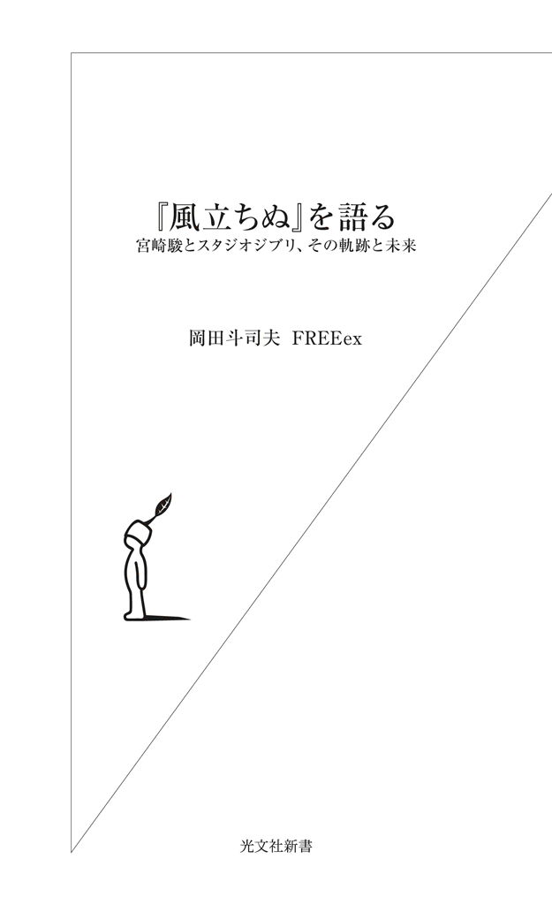
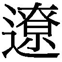
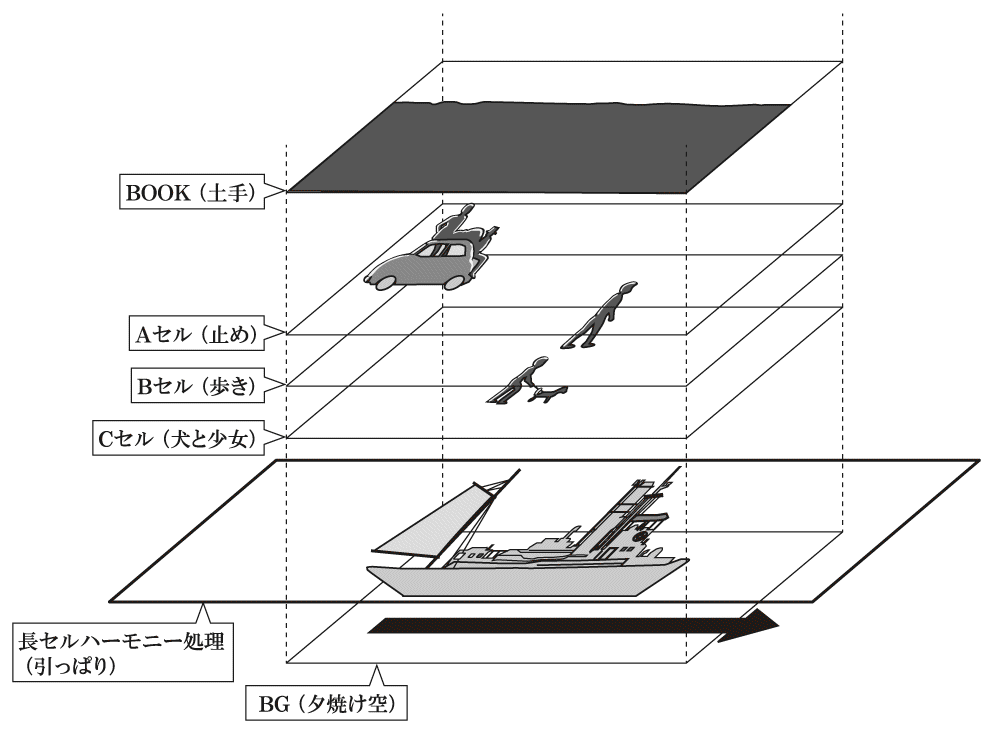
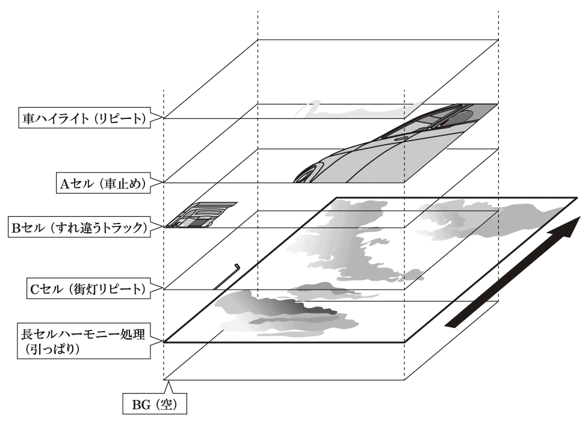
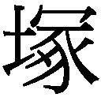
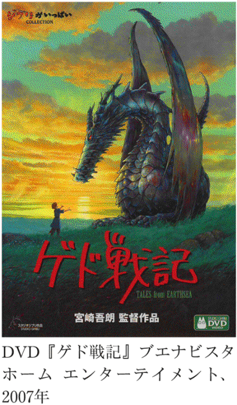

| 『風立ちぬ』を語る～宮崎駿とスタジオジブリ、その軌跡と未来～ (光文社新書) | |
| 岡田 斗司夫 ＦＲＥＥｅｘ | |
| (2013) | |

プロローグ
人間・宮崎駿に迫る
僕が初めて宮崎駿の名前を意識したのは、１９８０年代、人の紹介で出会った庵野秀明のおかげでした。
彼はのちに『新世紀エヴァンゲリオン』（以下『エヴァンゲリオン』）というとんでもない作品を生み出し、僕も「ガイナックス」というアニメ・ゲーム制作会社を立ち上げることになるのですが、お互いにまだ何者でもなかった学生時代のことです。
その頃は宮崎駿も、今のような世界に誇るアニメ監督というわけではありませんでした。それでも庵野秀明は、「宮さん、宮さん」と親しみを込めて呼びながら、何度も宮崎駿のすごさを、まわりの人々に熱心に語り倒していたのです。
僕の自宅の大型プロジェクタで、『ルパン三世』の「宮さんの回」の爆発シーンを何度も何度も繰り返し見ていた彼の姿は、今でも鮮明に記憶に残っています。
爆発のタイミング、炎や煙の色、広がる速度......。それらのタイミングに合わせ、何やら口から効果音を出し、両手で爆発の速度や威力を再現しようと試みる。庵野は宮崎駿のアニメーション技術を、まさに全身で「体得」しようとしていたのです。
そして、それがＤＡＩＣＯＮⅢの爆発シーンに、見事生かされたのです。
と言っても、これが何のことだかわかる人は、ほとんどいないでしょう。
ＤＡＩＣＯＮⅢは、１９８１年に開催された「第20回日本ＳＦ大会」の愛称です。ＳＦ大会は、日本各地のＳＦファングループが１年ごとに持ち回りで開催する巨大なイベントで、この夏は、僕と武田さん（ガイナックス・現取締役）、澤村君（同・元社長）の３人が中心となって、大阪で開催されました。正式名称は日本ＳＦ大会ですが、大阪で３回目に行われるコンベンション、という意味で「ＤＡＩＣＯＮⅢ」と呼ばれたのです。
このＤＡＩＣＯＮⅢの開会式（オープニング）用に制作したのが、ＤＡＩＣＯＮⅢオープニングアニメでした。たった３分間しかない、８ミリのアマチュアアニメーション作品です。
庵野秀明、赤井孝美、山賀博之の３人を大阪芸術大学からクリエイターとして迎え、大量の人間を投入して、僕たちはこのオープニングアニメーションを作りました。ちなみにこれは、僕が初めて作った映像作品で、その頃僕の家は、アマチュア・アニメの制作現場になっていました。この辺の経緯は、島本和彦の漫画『アオイホノオ』（２００７年～、小学館）にもあるので、興味のある人はどうぞ。
その後、宮崎駿は劇場版アニメーション『風の谷のナウシカ』（１９８４年）の監督をきっかけに、日本で一番有名なアニメ監督になっていきます。
宮崎駿監督作品は、すでにさまざまな角度から語られ、論評本も多数あります。ですが、作品だけでなく人間「宮崎駿」を中心に据えて語ると、まったく新しい風景が見えてきます。
ライバル・高畑勲との関係。息子・宮崎吾朗との関係などなど。今まで一ファンとして知っていたバラバラの情報を、「宮崎駿」という個人に焦点をあてて組み直してみると、そこから宮崎駿の価値観や生き様が浮き彫りになってきたのです。
これが僕は、面白くて仕方がなく、ことあるごとに宮崎駿やスタジオジブリについて語ってきました。トークライブハウス「ロフトプラスワン」のステージで、あるいはニコニコ生放送の公式ゼミで、あるいはインタビュアーを前にして......。
話すたびに、僕はいつも大きな発見をすることになります。さまざまなピースを並べてみせることで、誰も想像しなかった、僕自身ですら考えもしなかった宮崎作品の読み解き方が、鮮やかに浮かび上がってきたのです。
特に最新作『風立ちぬ』において、人間「宮崎駿」という視点は強力です。というのも『風立ちぬ』は、宮崎駿が初めて自分の作りたいテーマに真正面から向き合い、作った作品だからです。ある種、私小説的な要素を持った作品ともいえるでしょう。
一度、宮崎駿像を交えた視点で作品を見てしまうと、もうどうしても、そういう見方でしか楽しめなくなるはずです。
さまざまな切り口で語った話を俯瞰すると、もっと多角的な宮崎駿作品の読み解き方が見えてくるのではないだろうか――。そんな狙いから、『風立ちぬ』をベースにしつつ、あちこちで語った僕の「宮崎駿」論をひとつにまとめてみることにしました。
今年（２０１３年）９月６日、とうとう宮崎駿が引退宣言をし、この作品は、最後の長編監督作品となりました。本書を執筆している２０１３年９月末には、興行収入は１００億円を突破し、観客動員数も１０００万人に達すると見込まれています。
ところが、こうした人気の一方、作品をどう見ればいいかわからないという声も多く聞こえてきます。二郎と菜穂子のロマンスに泣くほど感動したという意見もあれば、ストーリーに釈然としない、理解に苦しむといった人もおり、賛否両論です。
そんな読み解き方がわからない人にこそ、この本をぜひ読んでいただきたい。そして、すでに一度見てしまった人も、僕の解釈を知っていただいた上でもう一度作品を見ると、新たな発見があることでしょう。
そして、宮崎駿ファンの人、今後のジブリが気になる人、あるいは「なぜここまで人気があるのかわからん」と思っている人も、ぜひページをめくってみてください。
企画構成／山路達也
第１章 『風立ちぬ』を語る
ボロボロだった、最近の宮崎駿監督作品
劇場に足を運んだ人も、まだの人も、劇場や電車の中吊り広告、テレビＣＭなどで、『風立ちぬ』のポスターや予告を目にしたことがあるでしょう。この宣伝ポスターを見て、みなさんはどう思われましたか？ 青い空、白い雲、爽やかな顔で空を見上げる主人公、スミ文字で書かれたキャッチコピーは「生きねば。」。僕は思わず、「とんでもない大ウソだ〜！」と叫びそうになりました。
映画のタイトルは、堀辰雄の同タイトルの小説から取っていますが、中身は堀越二郎の『零戦 その誕生と栄光の記録』（２０１２年、角川文庫）という戦闘機開発物語です。正確にいうと、堀越二郎の『零戦』を基にして、堀辰雄の小説からの着想も取り込んだカラーコミック『風立ちぬ』を、宮崎駿が『モデルグラフィックス』（大日本絵画）という雑誌に連載していました。それをアニメ化したのが、映画『風立ちぬ』です。
「戦闘機のことを語る映画なのに、このタイトルとポスターはすごい！ ジブリは商売がわかってるなあ」と、感心しました。
上映にさきがけ、映画館で流れていた４分間の予告編では、冒頭から、関東大震災が圧倒的な作画で表現されていました。地平線の向こうから家がぐおーっと揺れて盛り上がり、瓦屋根がダダダ～ッと波打つ。これを見て、「すげーっ！ 宮崎駿、本気だ！」と思ったのです。
正直いって、『となりのトトロ』（１９８８年）以降くらいから、宮崎駿監督の映画はろくな出来のものがありませんでした。
『魔女の宅急便』（１９８９年）なんて、後半がボロボロです。みなさんは、ストーリーをちゃんと覚えていますか？ この映画には、ウルスラという画家を目指す女の子が出てきます。以前、『魔女の宅急便』について若い人たちと話をした際に、「森の中にログハウスがあって、そこに住む絵描きの女の子が登場したのを覚えている？」と質問したのですが、誰ひとり覚えていませんでした。よくて「そういえば、そんな子もいたかなあ」という程度でした。本編が、バラバラででたらめなので、肝心なシーンも記憶に残りづらいのです。
『千と千尋の神隠し』（２００１年）も視覚効果はいいけれど、ストーリーは全然面白くありません。『ハウルの動く城』（２００４年）だって、後半は話がでたらめです。
『崖の上のポニョ』（２００８年）に関しては、相変わらずスペクタクルシーン――襲いかかる津波の上を幼女が走るという、悪夢のようなシーン――はものすごく美しくてかっこいいけれど、全編を通して見ると「なんじゃこりゃ」な作品です。だって、海の女神が「あなたがその女の子を裏切ったら、地球は最後よ」と保育園児を脅迫して、その子が「はい！」と元気よく答えるのが、ハッピーエンドのように描かれているのですから。
宮崎駿は、作画や画面構成、見せ方はモンスター級なのに、お話はダメダメな人になったのかなと、僕は何となく寂しく思っていました。しかし、『風立ちぬ』に関しては、予告編の段階から、これは間違いなく名作だというにおいがぷんぷん漂ってきていました。「零戦の開発者の話」という縦線がきちんと通っているし、歴史的な事実も踏まえてストーリーもしっかりしているように感じられたのです。
いびつな天才の恋愛物語
はたして、本編の出来はどうだったのか？ もったいぶらずに、結論から言ってしまいましょう。
『風立ちぬ』は、宮崎駿監督の最高傑作です。正直、ここまでの作品に仕上げてきたのは、僕にとってまったく予想外でした。
しかし、
「音も映像もすばらしい！ 主人公たちの愛に涙しました！」
......なんてことが理由ではありません。
いや、確かに音も映像もすばらしいです。けれども僕が感動したのは、主人公たちのいびつな愛情だったのです。
この映画は、薄情者の恋愛の話です。主人公の堀越二郎は、妹の加代から何度も「薄情者です」と言われます。人間の感情をまったく持っていない、というほどではないにしても、ものすごく希薄です。そのくせ、女性に対する自意識がすごく強いのです。
彼の自意識の強さは、冒頭部からしっかりと描かれています。
少年時代の二郎が、夢の中、飛行機で街の上空を飛び回るシーンがあります。飛行機に乗った二郎は、上空から人を見下ろしているのですが、それが自分以外の他人をちょっと見下している感じの描写になっています。
夢の街に出てくる男たちは、二郎の乗った飛行機にまるで気がつきません。その一方で、遊郭にいる女性たちやかわいい女の子たちは、二郎に向かっていっせいに手を振り、うれしそうにしています。
二郎は「かわいい女の子にいい顔をしたい！」という欲求が強いのですが、度の強い眼鏡をかけないとまわりの様子をはっきり見ることができません。これが、彼のコンプレックスになっています。
もう一度映画を見ることがあれば注意して観察してほしいのですが、どんなシチュエーションであっても、自分の視界や画面内にかわいくて綺麗な女の子が出てきたら、二郎は必ずそちらをチラッと見やります。そういう細かな演技を、宮崎駿監督は要所要所できちんと入れています。
この映画は、「恋なんかしない朴念仁が、ついに恋をした」という見方をされることが多いようですが、そうではありません。二郎には「女の子によく見られたい」という自意識が人並以上にあるのに、ど近眼というコンプレックスのせいでそれを表に出せない人間です。
この映画は、そんな男の子の恋愛のお話なのです。
二郎が最初に恋したのは誰か？
この映画のヒロインは、結核を患うお嬢様の里見菜穂子です。しかし、実は二郎が最初に恋をしたのは、里見家の女中、お絹のほうでした。
１９２３年、関東大震災が発生したそのとき、二郎は同じ列車に乗り合わせたお絹と菜穂子を助けます。二郎は名乗ることなく彼女たちと別れるのですが、２年後、二郎が大学の教室にいるときに、女の人が荷物を置いていったことを告げられます。届けられた風呂敷包みを開けると、二郎が彼女たちに与えた着替えのシャツと計算尺と手紙が入っていました。その瞬間、二郎の脳裏にはお絹の後ろ姿が浮かび、その女性をすぐに追いかけようとします（結局、彼女は去った後でしたが）。下宿に帰宅した後、久しぶりに訪ねてきた妹の加代に「その（震災の）あと、お家を訪ねてみなかったの？」と訊かれ、「行ったよ。火がおさまってから一度だけ......」と答えます。
なぜ二郎は、そのとき里見家を訪ねたのでしょう？ もちろん、彼女たちのことが心配だったからというのもあるでしょうけれど、「お絹に会いたかったから」というのが一番の理由ではないでしょうか。
そうでないなら、荷物を開いた瞬間、二郎の脳裏にお絹の後ろ姿だけが浮かんだりしないでしょう。宮崎駿のような監督・演出の天才が、無駄なカットを一秒たりとも入れるはずがありません。つまり、二郎の初恋の相手はお絹ということを示しているのです。
二郎は菜穂子と恋愛する段になって「僕はあなたを愛しています。帽子を受け止めてくれたときから」と言いますが、それは違います。関東大震災あたりのシーンでは、二郎はお絹に惹かれていたのですから。
そう、菜穂子に「帽子を受け止めてくれたときから」と言ったのは、悪意のない嘘なんです。
里見菜穂子の狡猾な計算
菜穂子という女の子は二郎に対してすごく健気に尽くしますが、その健気さは純粋さからくるものではありません。
関東大震災の日に出会い、少女の菜穂子は二郎に一目惚れしてしまいます。それから大人になって再会するまでの９年間、ずっと二郎のことを好きだったのでしょう。このとき、彼女は二郎がお絹に惹かれていることに感づいています。
軽井沢のシーンでは、突風で飛ばされた菜穂子のパラソルを、偶然二郎がキャッチします。菜穂子はすぐに二郎に気づきますが、二郎は彼女に気づきません。
では、どうするか？ ここから、菜穂子の戦略が始まるのです。
彼女は純真なように見えますが、二郎の気を引くため、手練手管を使います。
二郎と再会した日には、イーゼルを丘の上に立てて絵を描いたのに、翌日には泉に延びる森の入口にイーゼルと絵、そして同じパラソルを置いておきます。
この光景が変だということがおわかりでしょうか？
前日と同じ絵を描くためなら、構図からいっても丘の上にイーゼルを置かないと描けないはずです。
それなのに森の入口にイーゼルを置き、絵を立てかけっぱなしにして、前日と同じパラソルを開いていました。これは、「私はここにいるから来てください」「森の中に入ってきてください」と、二郎を誘っているのです。
菜穂子にしてみれば、震災の日の二郎のことを覚えていて「あっ、あのときの人だ」とすぐに気づきました。だから、彼も自分のことを覚えてくれているとばかり思いましたが、そうではありませんでした。だからこそ、「あなたがここへ来てくれるように、泉に願をかけていた」という言い訳、つくり涙を使ったのだと僕は感じました。
その後、にわか雨に見舞われた二郎と菜穂子は、菜穂子のパラソルに一緒に入り、会話をしながらホテルに帰ります。その間に菜穂子は、お絹が結婚したこと、２人目の赤ちゃんが産まれたばかりであることを、二郎に話します。ちょっとひどい言い方になりますが、これは恋敵を完全につぶすための菜穂子なりの戦略、幼い女の性の現れでしょう。そうやって、ひたむきに二郎の心を自分に向けようとするわけです。
二郎には人の心がわからない
この作品の中には、普通の人間的な心を二郎が持っていないことを示す描写が、随所に出てきます。これが実に面白いのです。
二郎が名古屋の三菱重工で働き始めてしばらくした頃、家に帰るのが遅くなり、途中の店でシベリアを買います。シベリアは、カステラで羊羹を挟んだお菓子のことです。「生クリームがないからあんこ挟んどけ」とでもいった、和菓子のような洋菓子のようないい加減なお菓子で、昔のベーカリーなどではよく売られていたようです。映画を見た後、僕も売っている店を探して食べてみましたが、予想以上にイマイチでした。
さて、シベリアを２つ買った二郎が店を出て、ふと道端を見ると、小さな女の子が子守をしています。二郎は手に持っているシベリアを女の子にあげようとしますが、その子に逃げられてしまいます。
帰宅後、友人で同僚の本庄にこのことを話すと、「そりゃ偽善だ」「お前、その子がにっこりして礼でも言ってくれると思ったのか？」と言われてしまい、二郎は「違う！ いやそうかもしれない」と慌てます。
本庄の言葉は、自分では意識していなかった二郎の本音を突いたのでした。子守をしていた女の子に、自分のことをよく思ってもらいたいから、二郎はシベリアを差し出したのです。しかし、女の子も幼いとはいえ、女。下心のある男を拒否します。
この映画では、さまざまなポイントで、二郎と他人、特に女性との関係性が描かれます。そこで描かれるのは二郎の非人間性、とまでは言えないにしても、「どうやって他人と関わっていいのかわからない」「女の気持ちがわからない」という、ちょっと歪んだ人格です。
善意からシベリアをあげようとした女の子に「施しなんかいるもんか！」といった感じで反発されて逃げられても、二郎にはその子の気持ちがわかりません。それを友達に指摘されても、やっぱりよくわからないのです。
だからといって、二郎が悪人というわけではありません。少年時代の二郎は、下級生がいじめられているのを見つけると、自分より体の大きい男の子を見事な一本背負いで投げ飛ばしました。それくらい正義感は強いのですが、人情や人の心が本当にわからないのです。
僕自身も昔から「岡田さんは頭がいいけど、人の気持ちがわからない人ですね」と何度も言われてきました。言わんとすることはなんとなくわかるのですが、感覚的な部分がいまだにどうしてもピンと来ない。二郎もきっと、そういう人間なのでしょう。
二郎にしてみれば、「シベリアをあげようと思っただけなのに。『ありがとう』と言ってもらえればうれしいのに、どうして僕を避けるんだろう？」と不思議で仕方がありません。貧乏人の気持ちは、彼にはまったくわからないのです。
この映画は「そういう二郎が人の心をわかるようになる映画」......ではまったくありません。その意味でもすごいんですよ！
「声優」庵野秀明の起用は正解か？
『風立ちぬ』の公開前、僕は主人公役の声優を心配していました。二郎役を務めたのは、庵野秀明です。彼は『エヴァンゲリオン』を作った天才ですが、声優経験のない、ずぶの素人です。
基本的に僕は、アニメ作品において主演クラスの声優は、プロである必要はないと思っています。
これがアニメの声優に限らず、実写映画の俳優にも当てはまることは、いわゆる「角川映画」の新人女優や、その昔の石原裕次郎を見ればおわかりでしょう。メジャー映画になればなるほど、中心にいる人物は「キャラクター」を演じ分けることがなくなっていきます。「正義の味方」の主役は、「正義の味方」という１種類の演技、１種類の声で十分。スター性は必要ですが、演技力はさほど重要ではないため、新人やアイドルでも案外いけるのです。
その代わり、脇役にこそ演技力が必要になります。
例えば悪役なら、相手を騙すために甘い言葉で惑わしたり、ときには胸中を苦々しく漏らしたりします。政治家として誠実なふりをする、という演技だってあるでしょう。演技や声色のバリエーションの幅が求められるため、演技派と言われる役者は、副主人公やライバル役に割り当てられます。これが、昔からの配役の基本構造であり、そこに映画の面白さ、秘密があると思うのです。
これが、『風立ちぬ』の予告編を見るまでの僕の考えであり、信念でした。
主役クラスには演技力は必要ない。「キャラクター」があればいい。『風立ちぬ』の主役を庵野秀明が演じることは、とてもよいアイデアだと思って大賛成でした。彼の声は独特の魅力があるし、演技力に問題があったとしても、主役だったら大丈夫だと思っていた、んですけれども......。
『風立ちぬ』の予告編が始まると、もうしょっぱなから庵野秀明の棒読みが聞こえてきます。
「これだ！ これこそ棒読み、イッツ、ボウヨーミ!!」というくらいの棒読みが流れ出して、僕は思わず頭を抱えてしまいました。
これは、棒読みか否かといったレベルではありませんでした。「誰でも声優ができるというのはウソです。少なくとも庵野には無理ですよ」というくらい下手でした。わずか４分間しかない予告編の冒頭を聞いただけで、これです。今後、ウィキペディアで「棒読み」の項目を開いたら、庵野秀明の音声ファイルが流れるくらいやってほしいですね。
演技力では表せない二郎の非人間性
予告編からすごい棒読みで、本編ははたして大丈夫なのだろうか？ そこで僕は、３つの可能性を予想しました。
１つ目は、映画の最後まで庵野秀明の棒読みが気になって集中できない。
２つ目の可能性は、あれがフェイクだということ。もしかしたら、予告編ではアフレコを始めたばかりの一番下手な頃の声だっただけで、本当はその後、どんどんうまくなっていったのかもしれない。庵野秀明が話すのを聞いたことがある人ならわかると思いますが、彼の声は朴訥で、説得力と頑固さ、何ともいえない愛嬌があるのです。それがちゃんと演技として本編で出せていたら、きっとすばらしいはず。
３つ目の可能性は、映画が終わる頃には、もはや庵野秀明の棒読みが気にならなくなっているということ。最後まで演技は下手なままですが、下手であるがゆえに嘘っぽさがなくて、観客は「庵野秀明の声」ではなく、堀越二郎という零戦開発者の声を聞いている気持ちにさせられるのかもしれません。
３つの可能性のうち、一番望ましいのは３番目です。
これから先、庵野秀明が声優として活躍することはないでしょう。だから、庵野の演技が上達するよりも、あの演技を最後まで貫き、おしまいにはなぜかそれがぴったりに聞こえるようになってほしい。今後、日本で「零戦の開発者」と聞くと、誰もが庵野秀明の声を思い出すようになるのがベストでしょう。
結果的には、３番目。そして、庵野秀明というキャスティングで正解でした。
僕がここまで語ってきた堀越二郎というキャラクター像からして、大成功と言ってもいいでしょう。なぜかといえば、二郎という人情のない男を演じるには、演技ができてはダメだからです。
二郎には人情がありません。
婚約者の女の子が、寒いサナトリウムでひとり結核の療養をして自分の見舞いを待っているときにも、職場で仲間たちと勉強会を開いては「今度はこんな飛行機を作るんだ！」とうれしそうに話しているのです。自分が好きなことには熱心で、婚約者の病状を気にかけるよりも、仕事が楽しくて楽しくてしょうがない。これは、ある種の非人間性です。ものを作る人間特有のエゴなのかもしれませんが、明らかに人間として壊れた部分です。そういう部分を表そうとするあまり、役者が自分の心の中で演技してしまうと、どうしてもとってつけた感じが出てしまいます。
ところが、庵野秀明の堀越二郎は、まったく演技ができておらず、限りなく棒読みに近い。しかし、それを演技のうまい人たちの中に混ぜることで、二郎の人情がすごく薄いこと、一生懸命人間らしいふりをしている様子、非人間的な天才の存在感が伝わってくるのです。
２人の異国人は何者か？
この映画には、２人の異国人が登場します。
ひとりは、カプローニというイタリアの飛行機設計士です。二郎は幼少期から夢の中でカプローニと触れ合い、さまざまなことを教えてもらいます。そしてもうひとりは、軽井沢で出会う謎のドイツ人、カストルプです。
カプローニやカストルプの顔がアップになったとき、放射状に輝く彼らの目の虹彩が怪しく動いたり回ったりしているのが印象的です。これは、２人の異国人はともに人ならぬ存在であり、二郎を天国と地獄とが表裏一体になった世界に誘っていることを表しています。
ドイツ人のカストルプは、滞在先の軽井沢を指して「ここは魔の山」と二郎に告げます。『魔の山』とはトーマス・マンの書いた教養小説であり、戦前、戦中の教養人であれば確実に読んでいるであろう本です（そもそもカストルプは、『魔の山』の主人公の名です）。
『魔の山』の舞台は、冬のドイツの雪山にあるサナトリウムです。つまり、「ここは魔の山」というセリフは、「将来菜穂子は雪山の療養所で結核の治療をするけれど、二郎は最後まで一度も見舞いに来ることなく、彼女はひとり寂しく死んでいく」ということを予言しているのです。
カストルプが初めて二郎と会話するとき、パッケージが特徴的なドイツのタバコを吸いながら、「ドイツのタバコ、これ最後、悲しい」と言って、二郎から日本のタバコをもらい、２人で吹かします。ところが後日、菜穂子の父親、二郎、カストルプの３人で話すシーンで、同じパッケージのタバコをまた吸っているのです。ということは、カストルプは本国ドイツから時々連絡や補給を受けている、つまりスパイだったのです。
彼はドイツにも日本にも忠誠心を持っていないし、戦争の行く末もわかっています。カストルプは、「魔の山」では「現実世界を忘れる」とも言います。これは世界のことなど忘れて、その瞬間を大事にする生き方であり、カストルプ自身、国外逃亡を図っています。
一方、夢に現れるカプローニは、二郎に「君はピラミッドのある世界と、ピラミッドのない世界とどちらが好きかね？」と問いかけます。
ここでいうピラミッドとは、一体何でしょう？
ピラミッドのある世界というのは、簡単に言えば、貧富の差がある世界のことです。
二郎の友人・本庄は、こうした世界のありように疑問を抱いていて、時々二郎に問いかけます。「取り付け金具１個の金で、その娘の家ならひと月は暮らせるよ」「今回の技術導入でユンカース社にどれだけ金を払うか知っているか。日本中の子どもに天丼とシベリアを毎日食わせてもおつりがくる金額だ」「貧乏な国が飛行機を持ちたがる。それで俺たちは飛行機を作れる。矛盾だ」とも言っています。
これこそが、ピラミッドなのです。
ピラミッドのある世界では、貧しい人たちから金を巻き上げて、頂点にいる人間が夢を叶えます。それは弱肉強食ではなく、もっとたちが悪い。弱肉強食の世界では弱者を食い殺して強者が生き残るのですが、ピラミッドのある世界では貧しい人間は、上にいる人間にどんどんお金を吸い上げられていきます。貧富の差があったり、差別があったりする世界です。
カプローニはこうしたピラミッドのある世界を肯定していますが、二郎はそれについて直接回答はしません。
「綺麗」を選んだ二郎という男
しかし、二郎の答えは、別の形で明確に表されています。「僕は美しい飛行機を作りたいと思っています」というのが、二郎の答えです。
こう答える二郎は、全編を通して綺麗なものばかりを見ています。先に述べたように、二郎は「綺麗な女の人が現れると必ず目で追う」のですが、それは彼が浮気者だとか、女に目がないからではありません。
彼の目には綺麗なものしか入ってこない、他には関心がないのです。
だから、菜穂子との恋も綺麗で、ゆえに残酷です。二郎が菜穂子を好きな理由はただひとつ、「綺麗だから」です。どうして菜穂子を好きになったのかを打ち明けるシーンでも、彼は「綺麗だよ」としか言いません。
では、そう言われた菜穂子はどうするのでしょうか？
綺麗な自分でいるしかありません。
菜穂子が最初にサナトリウムへ行った理由は、「二郎さんと生きたい」からでした。それなのに、なぜ彼女はサナトリウムを抜け出してまで、二郎のもとにやって来たのか。
「綺麗」なものしか見えない男に、「綺麗」な自分を見せるためと考えれば、彼女の行動はとても自然です。
病状が悪化していく菜穂子は、二郎に自分が綺麗でないところを見せられません。だから、彼女はひとりで死ぬしかありませんでした。
自分が綺麗でいられる限界まで二郎の近くにいて、綺麗なところだけを見せたのです。これ以上一緒にいたら、毎日血を吐きながら綺麗でないところを見せるしかなくなると思ったからこそ、たったひとりで、看取る人もなく死ぬしかない「魔の山」へ帰って行ったのです。
宮崎駿監督は、こんなに残酷で美しい話をよく作ったなと思います。
そういうと、「そんなひどい話なのか？」とみなさんは思うかもしれませんね。でも、映画館で見たら綺麗だったでしょう？ 感動したでしょう？ 僕らは残酷で綺麗なものに感動するのです。
残酷で美しいアニメ作品といえば『エヴァンゲリオン』がありますが、『風立ちぬ』の残酷さはあのような形では現れません。
この映画は全編が美しく見えるのですが、その裏には人間のエゴが入っている。僕らはそのエゴが一見わからなくて、この映画の残酷さがよく理解できないのです。
なぜ菜穂子は山を下りたのか
二郎は菜穂子のことを「綺麗だ」といつも言っていますが、彼はいつだって綺麗なものに目を奪われているのです。二郎が「飛行機を作っているのは、飛行機が綺麗だからだ」ということを、菜穂子はちゃんと知っています。
それでも二郎は菜穂子とお付き合いしよう、結婚しようと言ってくれました。
菜穂子は二郎のことを、もっと人間味のある人だと思っていたので、最初ひとりで遠い山奥のサナトリウムへ向かいました。二郎が見舞いに来てくれれば、寂しいサナトリウム生活にも耐えられると考えたのでしょう。
しかし、療養中の菜穂子は、二郎からの手紙を読んでサナトリウムを抜け出し、ひとりで二郎のいる名古屋までやって来ます。
この二郎からの手紙には、何が書いてあったのでしょうか？
最初の２行には、「早く元気になってください。心配しています」といったことが書いてあります。しかし、３行目からは自分の仕事のことしか書いてありません。
その手紙を読んで、菜穂子はどう思ったでしょうか？
軽井沢で２人が再会したとき、菜穂子は森の入口にパラソルと絵を置いて「私はここにいます。迎えに来てください」というサインを二郎に送りましたね。同じように、サナトリウムでひとりで病気と闘っていれば、そして二郎が本当に自分のことを好きなら、１回か２回は絶対に絶対に絶対に見舞いに来てくれるはずと思っていたことでしょう。けれども、二郎は来てくれませんでした。菜穂子を気遣う言葉が最初の２行に書いてあるけれど、便箋のほとんどは、二郎の仕事の報告で埋め尽くされているのです。
二郎は手紙を通して、病気の菜穂子に、「君より美しいもの」の話を延々としてくるのです。だからといって、菜穂子は精神を病んだり嫉妬に狂ったり、暴れたりはしません。それが菜穂子の純愛です。
「わかった、私は飛行機に勝てない。じゃあ、私が一番綺麗なこの瞬間を、ひとり山の中で腐らせてどうなる。だったらあの人の近くで、綺麗なまま死のう」
そう決意して、二郎のところにやって来たのです。
里見菜穂子の赦し
そして、２人の再会シーンです。
駅構内の雑踏の中で再び２人は出会い、抱き合い、二郎は菜穂子にやさしくこう言います。「よかった、見つけられなかったらどうしようかと思った」
自分のことを好きな女の子が、自分に会うためにサナトリウムから必死に抜け出してきたのです。それなのに、二郎はこの期に及んでも自分の心配だけをしているんです。
菜穂子はそれを含めて、二郎を全部赦しています。どんな状況でも美しいものしか見ようとしない二郎も、菜穂子は全面的に肯定しているのです。だから、この映画は深い愛の話でもあるのです。
菜穂子といるとき、二郎は常に眼鏡をかけています。なぜかといえば、菜穂子が美しいから、菜穂子の美しさを見ていたいから。仕事中だからというときもありますが、二郎はずっと眼鏡をかけて菜穂子を見ています。
ある明け方、プロトタイプの設計を徹夜で終え、疲れ果てて帰ってきた二郎は、「あとは飛ばすだけだ」と言って菜穂子の隣で眠りにつきます。菜穂子は、そんな二郎の眼鏡をそっと外します。それまで二郎があまり見せてくれなかった素顔、菜穂子が一番見たい眼鏡のない二郎を見るために、眼鏡を外して彼を抱き寄せたのです。
恋愛ドラマといえば、お互いに綺麗な愛情を持っている者同士がまわりの誤解やどうしようもない事情で引き離されたり、過去のトラウマを克服したりといったパターンが定番です。
ところが、二郎の愛情も菜穂子の愛情もいびつです。美しいものにしか興味のない二郎にとっては、飛行機に対する恋愛が主であり、菜穂子のことは、飛行機と同じように美しいという理由で愛している。菜穂子は、そんな二郎の非人間性に気づきながら、それでも「自分だけを見てほしい」と願います。
結核を患う菜穂子は、自分にこの先がないことはよくわかっていました。今この瞬間、美しいというだけの理由で、自分を真剣に好きになってくれた二郎。菜穂子は、彼を本当に大事に思っていました。もし、菜穂子の病気が治っていたとしたら、２人の恋は終わっていたでしょう。二郎の目に映る菜穂子は、老いるとともに美しくなくなってしまうからです。
二郎の残酷さ、そして、それをわかった上でなされる菜穂子の恋の駆け引き。宮崎駿監督は完全ではないどころか、明らかに欠点のある人間同士の恋愛模様を、見事に美しく描ききりました。
「男は綺麗なものばかり見続ける。女はあきらめてため息をつくしかできない」
宮崎駿監督は、今どきではないそんな恋愛映画を作り、劇場にやって来たおじいちゃんやおばあちゃんも感動させました。
眼鏡で表現される虚像と内面
登場人物や情景の描写についても、語るべきことがたくさんあります。
例えば、二郎の眼鏡。映画の本編では、二郎の眼鏡とその奥にある目が、実に細かく描写されています。目を描くのはもちろんですが、レンズに映る目まできちんと描いているシーンが何回も出てきます。
代表的なのが、次の列車内のシーンです。
菜穂子が血を吐いたという電報を受け取った二郎は、大急ぎで名古屋から東京へと向かう急行列車に乗ります。彼は列車の中でも設計をやめられず、計算尺を使いながら計算を続けます。計算式を紙に書き込んでいる二郎の目から、涙がぽろぽろ落ちてきます。涙は眼鏡の奥の目から溢れ、いったんレンズに当たってから紙の上にこぼれ落ちます。
二郎の眼鏡は、「僕はこの才能で世の中の役に立つ」とか「この飛行機を作って僕は男になる」といった、彼の自負心を象徴しています。そして、眼鏡の奥にある肉眼は、彼自身も気づいていない内面の象徴です。表層意識と潜在意識の関係を眼鏡と肉眼で表現した、実に見事な描写です。
冒頭の関東大震災のシーンも、見所が多いところです。地震で家々の瓦がいっせいに落ちるのですが、ここも注意して見てください。
そもそも日本家屋ではなぜ瓦を使っているのかといえば、日本が地震国だからです。地震が起こると、家が傾き、傾いた側の瓦が下に落ちます。瓦が落ちた側の重みが減ると、反対側の瓦の重みで家が微妙に復元します。つまり、瓦があることで、家が完全に倒れないようバランスが取れるようになっているのですが、こうした日本の知恵は今ではもうほとんど失われてしまいました。たんなる伝統文化ではなく、瓦を初めとする日本家屋の作りには科学的、技術的な意味があるのですが、『風立ちぬ』ではこうした細部についてもきちんと描かれています。
劇中でカプローニは二郎に「創造する人間の寿命は10年間、その10年間をどこに使うのか？」と問うています。宮崎駿監督は70歳を超えて、こんな表現を繰り出してきたのですから、まったくとんでもない人です。
「坂の上の雲」を目指した時代
次は、時代背景と登場人物たちの関係について見ていきましょう。
『風立ちぬ』の舞台となるのは、明治末の１９１０年代から終戦（１９４５年）まで。この頃はどんな時代だったのでしょうか。
『坂の上の雲』という、司馬太郎が日露戦争を描いた小説があります。日露戦争が行われたのは明治37年（１９０４年）から翌38年（１９０５年）ですから、堀越二郎が１～２歳の頃です。この小説では、日露戦争において日本がロシアにかろうじて勝利したことが語られていますが、それではタイトルにもなっている「坂の上の雲」とは何でしょうか？
それは、日本の近代化です。
日本は欧米列強を目指して登っていく。いつかこの坂を登りきったら、あの雲に行き着くと思って登り続ける。坂を登っても雲になんか行き着けっこありませんが、その憧れが人間の原動力なんだ、ということが『坂の上の雲』に描かれています。
『風立ちぬ』の登場人物も同じ憧れを持っており、日本を近代化して欧米列強に追いつくのが最大の夢です。
二郎の友人の本庄は、二郎が大学の食堂でサバの味噌煮を食べているシーンで、文句を言ってきます。
「二郎、またサバか。たまには肉豆腐でも食え」
二郎の返事は、
「サバはうまいよ」
本庄が、
「（牛で飛行機を運ぶのは）時速３キロで２日がかりさ。おそるべき後進性だよ」
といえば、二郎は、
「でも牛は好きだ」と返します。
二郎は、自分の関心ごとについて〈好き／嫌い〉、あるいは〈綺麗／綺麗じゃない〉という価値基準しか持っていないので、「サバはうまいよ」とか「牛は好きだよ」としか言いません。けれど本庄は、「何で日本はこんなに遅れてるんだ。もっと欧米に追いつかなきゃいけない」という問題意識を持っています。
僕は、このシーンがもうおかしくて仕方ありませんでした。確かに江戸時代の庶民は牛肉を食べていなかったから、牛肉料理は何となく洋食っぽい感じがするのでしょう。でも、本庄の想像できる西洋料理というのは、どう見てもベタベタの和食である肉豆腐なんです。
明治末から昭和初期にかけては、まだまだ日本が貧しい時代でした。『風立ちぬ』でも、関東大震災で被災しながらも頑張って生きている庶民の姿が描かれています。
それでは、二郎はどんな生活を送っていたのでしょう？
二郎は、一貫してエリートとして描かれています。子ども時代に住んでいるのは、大地主らしい金持ちの家です。他の人が歩いたり自転車に乗ったりしているときにも、二郎は蒸気機関車や電車に乗っています。社会人になり、三菱重工で戦闘機を作るようになってからは、タクシーも当たり前に使っています。こうしたシーンでは必ず、乗り物の外を庶民が歩いていることに注目してください。
『天空の城ラピュタ』（１９８６年）では、庶民の集う食堂でパズーが「肉団子２つ入れて」と言っていましたが、ああいう描写は何だったのでしょうね。これまでの作品を振り返っても、貧乏人の描写はステレオタイプで通り一辺倒である一方、エリートの描写にははるかにリアリティがあります。これは、金持ちの家に生まれて学習院大学に通った宮崎駿監督自身の経験から来ているのでしょう。
このように、『風立ちぬ』で描かれる世界は、貧富の差が歴然としています。だからこそ、国民全員が欧米のような生活を望んでいるし、軍部は飛行機や戦艦を独自で持ちたがります。庶民も軍人も政治家も、人々のすべてが夢を見ているのです。
そして、二郎が零戦を開発したからこそ、第二次世界大戦は長引き、結果的に日本は無条件降伏することになります。最後のシーンは、冒頭の関東大震災とほとんど同じ構図で描かれていますが、街はもっと広範囲に焼けています。関東だけではなく、日本中が焼け野原になる戦争をしたのです。
確かに、戦争を遂行するかどうかを決めたのは、天皇や政治家、軍人かもしれません。しかし二郎も、零戦という稀有な能力を持つ戦闘機を作り出すことで、日本人に坂の上の雲を見せてしまいました。
「こんな飛行機があれば、こんな技術があれば、日本もここまでできる」
そんな誇りを奮い立たせてしまったがゆえに、国民も政治家も軍人も、みんな坂の上の雲を見て、敗れるまで戦争を止められませんでした。この映画に登場するすべての人々には夢があり、その夢のせいで、みんな天国と地獄の両方を味わう構造になっているのです。
ちなみに、〈持てる者／持たざる者〉のピラミッド構造は、貧富の差に限らず、男女関係にも表れています。先にも述べたように、二郎が菜穂子に恋をした理由は、彼女が綺麗だからです。この映画において、綺麗な女は恋をします。けれども、二郎の妹の加代は、医者になっていきます。それは恋をしないから。かわいくないから、綺麗じゃないから、二郎の妹は恋をすることができないのです。
金持ち、権力者と同様、綺麗な女もピラミッドの上に位置しています。ただし、ピラミッドの上にいることの夢と残酷さも重層的に描かれています。二郎に恋した菜穂子は、結果的に自分の命を縮めることになりました。
里見菜穂子の死
菜穂子が二郎のもとを去り、サナトリウムに帰った後、クライマックスでは、二郎が作った銀色の試作機の試験飛行が行われます。
劇中の他の試験飛行のシーンはすべて墜落で終わるのですが、この銀色の試作機だけは墜落しません。試験飛行の山場、飛行機に負荷がかかってバラバラになりかけたとき、突然強い風が吹いてきます。二郎は、試作機から目をそらして、風が吹いてきた山のほうを見やります。
この瞬間に、菜穂子は死んだのでしょう。本当にぎりぎりまで二郎に綺麗な姿を見せようと無理をしたため、寿命が縮み、山の中でひとり死んでいったのだと思います。零戦の試作機が無事に飛んだのは歴史的な事実ですが、映画の文法的には、「菜穂子が自分の命を与えて飛行を成功させた」というメタファーになっています。
もしこれが凡庸な映画監督だったら、「はぁはぁはぁ」と苦しそうに息を吐く菜穂子のシーンを入れたことでしょう。菜穂子が「二郎さん、二郎さん、あの日飛ばした紙飛行機」と言っているところに、紙飛行機と飛んでいる試作機を重ねて映し、紙飛行機が菜穂子のもとに飛んでいく。危篤の知らせを聞いた二郎が病室に駆けつけ、たどり着こうとした瞬間、医者が「ご臨終です」と告げる......そんな演出をやってしまうものです。
ところが、宮崎駿監督はそれをしません。そんなことをしなくてもわかる奴はわかるし、お涙頂戴の映画を作っているつもりはない、ということです。
菜穂子が命を与えたからこそ二郎の飛行機は完成したのですが、それはハッピーエンドではありません。その結果、零戦が生まれ、日本人は坂の上の雲を夢見て、無謀な第二次世界大戦に突入していく。国家が沈没する、地獄の底へと向かってしまうのです。
宮崎駿監督作品の「赦し」
僕にとって宮崎駿監督の最高傑作は『風立ちぬ』ですが、それ以前は、後の章で詳述するアニメーション作品『On Your Mark』（１９９５年）でした。
この２作に共通するのは、最後に「赦し」があることです。赦されるのは、「アニメを作っている自分（宮崎駿）」や「零戦を作ってしまった自分（二郎）」です。本来ならば彼らがもっと大事にしなければならなかった人からの、赦しが描かれているのが面白いところです。
第３章で詳しく述べますが、宮崎駿、宮崎吾朗の親子関係は並ではありません。
宮崎吾朗は母親、つまり宮崎駿監督の奥さんから、
「あなたはお父さんのようになってはいけない、あの人は何ひとつ人間らしいこと、父親らしいことをあなたにしてくれなかった。あなたはそんな人間、アニメ屋になってはいけない」
と言われ続けて育ちました。
だから、宮崎吾朗も、
「僕は子どもの頃から何ひとつ親らしいことを、宮崎駿さんにしてもらったことはないです」
とブログに書いています。
宮崎駿監督は、ずっと家に帰らずにアニメを作り続けていた人間です。だから、彼が家族から赦されることはないかもしれません。でも、映画の中で、本来ならありえない赦しが主人公に与えられると、僕らはなぜか感動してしまいます。
何も僕は、「宮崎駿はこんなにひどい人間だ」と言いたいわけではありません。僕らだって何かを成し遂げようとしたとき、絶対に犠牲を払っているはずです。「夢を追いかけよう」「家族を食わせよう」、そんな当たり前の望みを叶えるために誰かを犠牲にしなければならないのが、この世界のあり方なんです。
あらゆる人の営みは、犠牲の上に成立しています。だからこそ、せめて綺麗な夢を見せたい。それが、『風立ちぬ』のラストシーンで宮崎駿監督が伝えようとしていることではないでしょうか。
堀越二郎のように夢に魅入られた人は、ある意味呪われているかもしれません。けれども、彼らの夢のおかげで日本人はひととき幸せになりました。幸せになった結果が、敗戦やバブル崩壊をもたらしたのかもしれません。今なら、アベノミクスで景気を回復させようという話がありますね。これらの根底にあることは、全部同じことだと思います。
どんな夢であれ、時勢や運によってうまくいかないこともあります。結果だけでは、夢の価値は計れない。そういう真実を描こうとしているように見えました。
物語の最後、二郎は夢の世界でイタリア人のカプローニと再会します。カプローニに「君の10年はどうだったかね？ 力を尽くしたかね？」と訊かれて、「はい」と答える二郎。カプローニが「その前に寄ってかないか。いいワインがあるんだ」と誘い、２人は丘を下りていきます。そのとき二郎は、本当に他人ごとのような表情をしています。彼は最後の最後まで「この映画で宮崎駿が語ろうとしていること」には気づかぬまま、美しいものだけをずっと見続け、追い続けただけでした。国家の半分が滅びても、国民の大多数が貧窮しても、敗戦して何千万人という人が死のうとも、彼は自分の満足のいく飛行機が作れたか、これからも作れるのかということにしか興味がありません。
それでも、幻の中に現れた菜穂子に「あなた、生きて」と言われ、「ありがとう、ありがとう」と答えます。人情の薄い、非人間的な二郎でも、ひとり寂しく死なせてしまった妻に対しては悪いと思っているし、心の奥にはピラミッドのある世界への引っかかりやしこりがあります。それを菜穂子が赦し、解放するという構造になっているのです。
残酷さ、美しさを演技で見せる
『風立ちぬ』に点数をつけるとしたら、僕は１００点満点中98点です。
いびつな人間の恋愛物語として、男の生き様として、また大正から昭和にかけての日本の価値観、風物を描ききった映画として、すばらしい作品でした。唯一気がかりなのは、子どもの楽しめるシーンがほとんどないことでしょうか。
これまでの宮崎駿監督作品、例えば『ルパン三世 カリオストロの城』（１９７９年）や『天空の城ラピュタ』『風の谷のナウシカ』では、最後にしゃらくさいセリフが出てきました。「あなたの心です」とか「人は大地を離れて生きていけないの」というやつです。僕はそれが嫌というわけではないし、２時間に映画をまとめようとすると、最後はしゃらくさくなるのは仕方がないと思っていました。けれども『風立ちぬ』には一切そういう部分がなく、ブツッと終わってしまいます。
それは、『風立ちぬ』が「演技」で見せる作品だからでしょう。アニメは動く画を見せるものですが、この作品は単によく動いているというだけではなく、登場人物に内面を表現する演技をさせています。
「なんだかよくわからないけど、このシーンにはぞくぞくする」
セリフや画だけでなく、演技を見せることで、人間の理性ではなく感性に直接訴えかけてくる。そういう演出を全編にわたって積み上げてきたのが、この作品のすごいところです。
『風立ちぬ』は、宮崎駿監督による『火垂るの墓』（１９８８年、監督・脚本：高畑勲）や『エヴァンゲリオン』への返戻でもあると、僕は思っています。
宮崎駿監督は、若い頃に共産主義運動をしていましたが、『風立ちぬ』では戦争と日本人のあり方についてより深い思索がなされ、「今の俺はそこじゃない」という主張を感じました。
そして、残酷さや美しさの描写です。『エヴァンゲリオン』のように、画を描いて「残酷だろう？」「美しいだろう？」と見せるのではなく、演技によってそれを表現する。「庵野君はその程度か？ 俺がやったらこうだ！」という意気込みを感じる作品になっています。
第２章 アニメ作家・宮崎駿のすごみ
宮崎駿監督は、単なる「老害」ではない！
僕が映画のテーマについて語るときには、２つの観点があります。ひとつは考察。もうひとつは分析です。
「考察」は、自分の言葉で語ればいいので、実は知識がなくてもできます。なので考察のほうがハードルは低いのですが、誰でもやれるぶん、凡庸な意見しか言えないとつまらなくなってしまいます。それをいかに自分にしか言えない意見にもっていけるのか、力量が問われるところです。
一方、アニメーションの「分析」というのは、どう作り込まれているかを見抜くことで、これには知識が必要です。
僕自身、ＳＦアニメーション映画『王立宇宙軍 オネアミスの翼』（１９８７年）を作るためにガイナックスを創業して以来、『トップをねらえ！』（１９８８年）など数多くのアニメ作品の制作に関わってきました。宮崎駿監督の作品も何十回と見てその技法を研究しましたが、ひとりのオタクとして「すごい！」と感嘆すると同時に、アニメプロデューサーとして「このオヤジどもにはかなわない......」と思い知らされたものです。
こういった長年の経験上、分析的なアニメの見方が身に染みついているのですが、みなさんの中には、そうでない方もたくさんいることでしょう。いわゆる「ジブリ映画」に慣れている観客は、かえって宮崎駿監督のすごみをきちんとは理解できていないように感じます。ほのぼのとした「ジブリっぽい」作品を作っていて、環境保全にうるさいおじいさん。宮崎駿監督にそんなイメージを持っている人もいるでしょう。
宮崎駿監督は、iPadのようなデジタルデバイスも大嫌いです。
「あなたが手にしている、そのゲーム機のようなものと、妙な手つきでさすっている仕草は気色わるいだけで、僕には何の関心も感動もありません。嫌悪感ならあります。その内に電車の中でその妙な手つきで自慰行為のようにさすっている人間が増えるんでしょうね」
とまでこき下ろしています（『熱風』２０１０年７月号）。
こういう話を聞くと、人によっては「デジタルの可能性のわからない老害だ！」とか「エコ万歳なんて、能天気！」と言いたくなるでしょう。
けれども宮崎駿監督は、無神経で単純なエコロジストではありません。
何だかんだいって、10歳老いれば、それだけ人間は深みを増すもの。まして、彼のように死力を尽くして作品を作っている人間は、いつまでも同じ場所に留まっていたりはしません。
僕は、宮崎駿監督の作品だけでなく、こういった発言を、ずっと昔から見てきました。
「きっとこういう人なんだろうな」と思っていても、また別の機会にはそれがひっくり返されてしまう。なかなか見切れるものではありません。
本章では、宮崎駿監督のすごさとは一体何なのか、アニメ作家としてずば抜けた技術力はどんなところに表れているのかを知っていただくため、技巧的な話も交えつつ、少し他作品の分析をしてみたいと思います。
わずか半年、素人同然のスタッフで作られた『カリオストロの城』
宮崎駿監督の卓越した技術力がわかる絶好の教材は、彼がメジャーになる前に作った『ルパン三世 カリオストロの城』（１９７９年、以下『カリオストロの城』）のオープニングです。
この作品には、宮崎駿監督の他、東映動画出身の作画監督、大塚康生ら実力のあるスタッフが参加していましたが、予算は少なく、スタッフの半分は素人同然でした。さらに、制作期間はわずか半年しかありませんでした。これだけの制約条件のもと、今も傑作と評価される作品が生まれたのです。
おそらくもうみなさん、金曜ロードショーとかで何回も何回も何回も、この作品は見てきただろうと思います。手元にＤＶＤやBlu-rayがあれば、ぜひ映像を確認しながら読んでみてください。
『カリオストロの城』のオープニングは、ルパンと相棒の次元が、小さい自動車でずっと道を走ったり休憩したりしながら、旅をするシーンで構成されています。それらのシーン一つひとつが少ない絵、少ない動きで見事に演出されていることに驚かされます。「見事！」としか言いようがない、「止め」や「引き」の集大成です。
「止め」とは同じ絵をそのまま何コマも撮影することで、当然止まって見えます。 「引き」は同じ絵を少しずつカメラの前で引っ張って動かしながら撮影すること。形はそのままでスライドすることで、動いて見えます。どちらも絵の枚数を使わない、安上がりな演出法です。
のちに宮崎駿監督は「純粋にスタッフ訓練のため、この作品を作った」と語っていますが、これほど少ない枚数の絵で多彩な表現を実現した作品は空前絶後でしょう。
この作品では、「国営カジノの大金庫からかっぱらってきた札束が偽札だった」というオープニング前の冒頭シーン（アバンタイトル）をはじめ、ものすごく凝った作画が行われています。ところが、スタッフが充実していたわけではありませんから、攻めるカット、守るカットと、作画のリソースをどう配分するかの作戦を立てる必要がありました。
攻めるカットでは、大量の札束が空に飛んでいくというように、作画にも手間をかけて観客をうならせる。一方、守るカットでは、絵が下手な人間が描いてもちゃんと成立させる。
守るカットのために、宮崎駿監督と大塚康生作画監督は、徹底的にレイアウト（画面構成）を工夫しました。
アバンタイトルが終わり、『カリオストロの城』のタイトルが出ますが、ここはほとんど真上からの構図で、宙に舞った後のお金がちらちらと落ちてくるだけ。右下の帆船は斜め上に引っ張られるだけです。落ちてくるお金も波も、同じ絵の繰り返しですから、ほとんど作画の手間はかかりません。
２枚の絵で30秒持たせる画面構成力
オープニング・タイトルの直後、運河の土手に車を止め、ルパンと次元の２人は背景の運河を進む船を眺めています。
このシーンは夕焼けの逆光の中ですから、絵は基本的にシルエットのみ。背景の船がゆっくり右に動いていきます。ほとんど車の絵と船の絵１枚ずつで30秒近く持たせているのですが、それがただの手抜きカットにならないのは、圧倒的なレイアウトのうまさによるものです。
まず、通過する船が変化に富んだ形をしており、複雑なデザインが集中する甲板上部だけ見えています。だから、ゆっくり後ろを動いているだけでも見る側を飽きさせません。なぜ甲板上部だけ見えているのかというと、後ろを流れる運河の水面は、ルパンたちのいる手前の土手よりずっと低いからです。車の高さで船を見れば、上部だけしか見えないわけです。
普通のアニメだと、ついつい船全体を描いてしまって画面が単調になってしまいがちなのですが、さすが宮崎・大塚コンビです。
しかし、この２枚の絵だけで30秒も持たせるのは無理だと考えたのでしょう。手前の土手を３人の人物が通り過ぎます。最初は自転車に乗った人。次に、ゆっくり歩いている人。その次は、犬と子どもが楽しそうに駆け抜けていきます。自転車の人を描くのはけっこう腕がいりますが、６枚くらい絵を描けば後は繰り返しで、右に引っ張れば走っているように見えます。人と自転車、船の速度差によって、画面にスケール感を出す工夫です。

家路を急ぐ人々、そして、それを見ているしかない自分たち。このカットには、「自分たちには帰る家がない」という意味が込められています。
天候の変化でストーリーを語る
船が通り過ぎた後で、次のカットに切り替わり、またも横向きのアングルです。画面中央を堤防が一直線に延びて、その上をルパンらの車が走っています。前も後ろも、夕焼けに染まる海です。
車がほとんど動いていないのに、ちゃんと走っているように見えるのは、タイヤ部分のセルだけを交換してカタカタさせているからです。そして、「堤防と手前の海のセル画」を横向きに引っ張っているので、車は動いて見えるのです。向こう側の海の模様は３枚くらいのセルの置き換えで、チラチラと照り返して光ります。これも、ただの「セル置き換え」ですね。
たったこれだけで手間も全然かかっていないのに、とてもきれいな画になっており、10秒しっかり持たせています。この堤防は、どこまで続いているのかわかりません。目的地をあえて見せないことで、この旅の「果てなさ」を出しています。
しかし、右から左、左から右へという楽な作画を２カット続けた後、宮崎駿監督は職人技を見せます。雨の中、大きく右手に曲がる道をルパンらの車が走り去る場面で、ここは手抜きを一切していません。アニメーションをやっている人間がこのコンテを見ると、「ウウッ」とうなるはずでしょう。
なぜかといえば、道を描いているからです。もし道が描かれていなくて、車がぴゅーっと走っていくだけならそんなにつらくはありませんが、道に従ってこの丸っこい車を描くのは大変です。四輪車は日常的に見ているものですから、近くから遠くへ車が進んでいくとき、どんなふうに小さくなっていくか僕らはだいたいイメージできます。観客が見慣れているものをちゃんと描くには、技術がいります。
おまけに、この車はカーブした道の幅に合わせてゆっくり小さくなるし、さらに途中で方向も変えているから、ものすごく面倒くさいんです。こんなものは、よほど自動車が好きでないと描きたくもないカットですが、２カット連続で手抜きしたのでここで動きを入れたのでしょう。
もうひとつ、ここで注目すべきは、雨です。
オープニングでは、本当にいろいろな天候が描かれています。朝焼け、夕焼け、夜、夏の暑い日、そして雨。
何のためにこれほど天候を変えているのかというと、ルパンたちの旅が実は何年も何年も続いていて、そしてこれからもずっと続くであろうということを見せるためです。でも、それをセリフで言いたくはない。
下手なアニメ監督だったら、「俺たちもうどれくらい旅してきた？ 次元」といったセリフを絶対に入れているところでしょう。それを宮崎駿監督は、手抜きカットの連続で見せているのです。これがすごい。このカットで車の動きは凝っていますが、雨を表す線はたんなる繰り返しで、上手に手抜きしています。
雨の描写を入れることで、２人の旅が決して順調なものでもないし、楽しいことばかりでもない。寂しいときもあれば、寒いときもあるということが暗示されています。
そして、バックには情感たっぷりの歌が流れる。これによって、僕らは理屈ではなくて、だんだんと心の深層で、この２人の旅がどういうものかわかってくるのです。
真夏の日差しまで感じさせる望遠圧縮効果
次は、坂道を真正面からレイアウトしているシーンです。
思いきり遠くから望遠レンズで撮影したかのような効果で作画しています。遠くのものを望遠レンズで撮影すると、遠近感が失われてちょっと面白い効果が出ます。これは「望遠圧縮」と呼ばれ、黒澤明監督もお気に入りだった手法です。
手前をトラックが走ってきます。タイヤが回っていて、車体がゆっくり下へスライドして画面からアウト。これで坂道を手前に降りていることがわかります。右側にはルパンの車の頭が坂の向こうからだんだん見えてきて、スライドしてどんどん上へあがり、やがて全体が見えてきます。ルパンの車のタイヤも回っていますが、これもさっきのトラックと同じく、タイヤの部分だけをセルで置き換えているだけで、手間はかかりません。
やがてルパンの車はゆっくり下がりますが、今度は車全体が見えたままです。これで道の向こうから手前へ坂を上って、降りてきたことがわかります。望遠圧縮ですから、車の大きさは変わりません。ゆっくり上へスライドさせ、次に下へスライドさせているだけですが、手抜きには見えません。逆に、この望遠圧縮効果によって、真夏の日差しを感じさせる場面になっています。
ここには、細かい芸が仕込まれています。麦わら帽子をかぶった女の子を、ルパンたちの車が追い抜く瞬間、ほんの少し画面の左側へスッとずれるんですね。
夏の暑い日ですから、車が走っていたら埃も出てしまうに違いない。でも、この真っ白な女の子に埃をかけたくない。ヒロインのクラリスに対するルパンたちの態度が、ここでもうちゃんと明示されています。
雲が真上に流れるダイナミズム
次は、横向きに走る車を地面スレスレからのアオリでとらえた場面です。
自動車全部はフレームに入りきらず、 左側のボディだけが見えています。窓ガラスに光が反射して、中は見えません。こういうゴマカシ、手抜きは本当に名人芸です。
画面左上には、大きく空がレイアウトされています。
このカットでは、走り続ける車の孤独感とともに、何とも言えない壮快感が表現されています。しかし、14秒もあるにもかかわらず、作画枚数は驚くほど少ないのです。
まず、前輪だけ見えている車のタイヤは左向きのままぴたりと止まっており、２～３枚のタイヤの絵を置き換えています。同時に、道に沿って並んで立っている街灯も同じセルのリピートです。これだけで、車が左に走っているように見えます。画面奥の反対車線を走る大型トラックが３台すれ違いますが、１台目と３台目はまったく同じトラック、つまり「セルの兼用」です。同じ乗用車が何度も通り過ぎるのは変ですが、無個性な大型トラックなら「トラック軍団が同じ荷物を運んでいる」というふうにも見えるのです。

しかし、このカットで最も注目すべき技法は、背景を流れる「雲の方向」でしょう。
左手上に大きく見えている空の雲はゆっくり流れています。普通なら車が左下へ進んでいるのですから単純に右上へ雲を引いてしまうはずです。けれど、天才宮崎・大塚コンビはそんな安易な構図は取りませんでした。
彼らは、ここで思いきって雲を真上に引っ張っています。この微妙な「引っ張り角度の裏切り」が不思議な効果を出して、画面に果てしない空のスケールを与えているのです。本来なら、次々と大型トラックが前からやって来る緊張したシーンになるところを、この空の開放感でぐっとリラックスした感じになっています。
ついでにいえば、雲を斜め方向に引っ張るより、真上に引っ張ったほうが撮影担当に払う料金が安上がりになるという事情もあったのかもしれません。あえて縦方向に動かすことによって、コストは下がるし、本来だったら雲はこう動くべきなのに、たまたまこっち方向に動いていたという不思議な感覚が得られます。
３枚のセルで人生に対する態度を表す
移動シーンの次は、踏切での列車通行待ちのシーンです。ルパンたちの車は画面左で向こうを向いて止まっており、その前を果てしなく長い長い列車が通り過ぎていきます。アメリカやヨーロッパの田舎ではよくある光景ですが、こうなると何十分も待たされたりすることもあります。列車の車両編成が長い上に、スピードも遅いからです。
ルパンが車の上へ腰掛け、次元は車のそばで立小便をしています。この手持ちぶさたな演技は、列車の長さの演出です。カメラ位置が低いので、列車の車輪の間から向こうの町並みが見えています。動いているのは列車だけですが、見え隠れする町並みを見ていると、退屈しません。つまり、引っ張りのセル１枚（列車）と止めのセル２枚（車とルパンたち、野の花）の計３枚で６秒ものシーンを持たせているということになります。
前の車のシーンでは開放感のある画作りをしていましたが、この列車待ちのシーンからは圧迫感を覚えます。オープニングは、圧迫感と開放感のシーンが交互に現れる作りになっているのです。この列車シーンの圧迫感は、視界を塞いでいる巨大な列車から来ていますが、列車の隙間に向こうの山が見えることで、わずかに開放感を持たせています。
このときルパンは何をやってるのかというと、列車の向こうの山を何となく見ていて、次元は立小便をしています。こういう行為に、彼らの旅に対する態度、人生に対する態度が表れているのです。
もしも、次元が立小便しているだけだったら、「２人の旅はこういうものですよ」という「説明」になってしまいます。確かにうまい説明ではありますが、それでは絵として美しくありません。そこで、コスモスらしき野の花を１点入れることで、この画面が（左端のおっさんたちさえ見なければ）とても美しいものになりました。
わずかな演技で２人の関係を見せる
アバンタイトルでは、お金を盗むルパン、大はしゃぎする次元というように、２人の表情をきっちり拾っていますが、オープニングに入ってからはロングからとらえた画ばかりです。海の上を走る帆船、土手の上で立っている２人、自動車が走っているだけのシーンなど、２人の表情や演技はほとんど見えません。
オープニングも終わりに近くなって、ようやくルパンと次元の２人が演技を始めます。演技といってもスタッフや予算の制約がありますから、そんなに手間をかけることはできません。次元はフライパンを振っているだけ、ルパンは新聞を読んでゴロンと横になっています。
この２人の間には会話がありません。ただし、会話がないというのはけっして「この２人の仲が悪い」ということではありません。オープニングの間中、ルパンと次元はアイコンタクトも取りませんが、「この２人には、単なる友情以上の絆があるから、一切会話がなくても大丈夫」ということが伝わってきます。
画面の中心部に明かりがあって、ルパンはその明かりで新聞か地図のようなものを読み、それから寝転がります。お互いに目を合わせなくとも通い合ってるものがあると、構図で伝えているのです。最小限の光で、ルパンと次元が旅の間にしていることを見せ、後ろには車を配置する。作品全体を通して、この車は「旅」の象徴になっているのです。
火を見せずにタバコに火をつける
次のカット、満天の星空を映した後、ゆっくり下へカメラがパンして、ルパンと次元の顔が大きく映ります。これは何気ないカットに見えますが、すごい冒険をしています。普通のアニメ監督だったら、いきなり２人の顔にカメラを持っていくところですが、あえて星空を映してからパンダウンさせています。これまであまりなかった縦方向のカメラの動きを入れることで、奥行きを出せる上、空の背景をスライドさせて撮るだけで済みます。次元はピクリとも動きません。
そして、ルパンがタバコに火をつけるカット。ここもうまいです。「タバコに火をつける」作画は難易度が高いのですが、ルパンの手で口元を隠して火を見せず、口のあたりを明るくするだけで表現しています。監督がコンテで丁寧に指定さえすれば、それほど技術が高くないアニメーターでもこのカットを描くことができます。
ルパンの腰のあたりが寝袋で隠れている点にも注目です。寝袋がなかったら、「人間がしゃがんでいる」というかなり難しい絵を描く必要があります。腰に重心がどうかかっているのかは素人が見てもすぐわかるため、手を抜くことができません。寝袋で隠れていることで、僕らはそんなことに注意を払わなくなりますし、ここでも２人が旅している感じがよく出ています。
タバコを吸い終わったら、２人はちょっと合図を交わして、車に乗り込みます。ここの芸も細かい。最初は電圧が上がっているからブレーキランプが明るく光り、次に動力が伝達された瞬間に電圧が下がってブレーキランプがほんの少し暗くなるという、ものすごく細かい作画が行われています。これも、「車」を丁寧に描くことで、次のファーストシーンへつなげようと、宮崎駿監督や大塚康生作画監督が思っているからです。
どのカットも、ほとんど絵の枚数を使っていないのに全然退屈させません。それどころか、旅の孤独感や人に頼らないルパンたちのダンディズムが伝わってきます。彼らは常に２人だけです。まわりに人がいても、常にすれ違うだけ。それがよけいに彼らの孤独感や、異国の地へ来たという感じを盛り上げています。動かない中に多くの意味を込める、日本のアニメならではの手法です。
強い作家性が現れた短編『On Your Mark』
ここまで述べてきた『カリオストロの城』のオープニングでもおわかりのように、宮崎駿監督はアニメーターとして卓越した技術力を持っています。
宮崎駿監督に限りませんが、優れたアニメ作家は無駄なカットを一切入れません。なぜかといえば、アニメ作家は偶然に頼れないからです。実写だと、たまたますごく綺麗な夕焼けが撮れたり、花火が美しく光ったり、俳優がぽろっといい笑顔を見せたりといった、偶然のサプライズに恵まれることもあるでしょう。それだけで、映画の面白さは１パーセントくらい上がることがあるのです。
しかし、アニメではそんな偶然に頼れません。自分がデザインした画面の中で、見ている人の心を動かして感動させなければいけません。だから、画面の隅から隅まで、それこそ１センチ四方に至るまで、絶対に意味のあることしかしないのです。
一つひとつのカットには必ず意味があり、そこから作家の本音、作家性が見えてきます。
『風立ちぬ』公開前まで僕は、宮崎駿監督の最高傑作は『On Your Mark』であると、言い続けてきました。この作品は、CHAGE and ASKAが発表した同名曲のプロモーションビデオとして制作された、６分30秒ほどの短編アニメです。元々は、CHAGE and ASKAのライブで流すことを想定されて作られました（１９９５年、『耳をすませば』と同時上映。ＤＶＤ『ジブリがいっぱいSPECIALショートショート』に収録）。
ライブで盛り上がっているCHAGE and ASKAファンに見せるために作られたため、この作品はとてもソフトに仕上がっています。
どこかの不思議な世界で、CHAGE and ASKAそっくりの警官が、「聖ＮＯＶＡ，Ｓ」と書かれた新興宗教施設から羽の生えた女の子を助け出し、解放してあげます。一見すると、ジブリらしい夢のある作品です。しかし、よく見てみると、「ちょっとこれ変だよ」という気がしてきます。この作品だけ、唯一「ジブリ実験劇場」と名付けられていることからも、特殊なものだということが感じられます。
以前、『On Your Mark』について、宮崎駿監督は何かのインタビューで「かなりの悪意を込めて作りました」と答えていました。一つひとつのカットをじっくり見ていくと、彼の言う「悪意」の意味が少しずつわかってきます。
カットごとの細かな解説は別の機会に譲りますが、この作品は、２人の警官が思い描いた妄想の話です。男２人が「俺たちはこうすればよかったんじゃないか」と、延々と妄想を繰り広げていくだけなのです。
ところが、アニメとしての表現がとことん上品になっているため、観客にその悪意を気づかせません。宮崎駿監督としても、CHAGE and ASKAのライブに来たファンを裏切りたくはないのです。どこまでもいい話として見せつつ、自分の本音をきちんと描いています。作家とは、本音で語るだけでもなければ、商売として割り切っているだけでもない。コインの裏表を常にちらちらと見せながら、自分のやりたいことを少しずつ探しては刻んでいく人間です。
『On Your Mark』はいくつものレイヤー構造になっており、それらを同時並行的に描いています。表面の層は、CHAGE and ASKAファンのための夢のある話です。それと同時に、「やろうとして結局ダメだったけど、挑戦はあきらめない」という話や、「妄想にすらネガティブな考えを持ち込んでしまい、結局やらない理由にしてしまうのが人間なんだ」という話を、歌詞に合わせて入れ込んでいます。
アニメ作りに伴う矛盾
さらにこの作品には、宮崎駿監督自身の生き様や後悔ものせられています。
ラストシーンで、２人に助けられた少女が飛び立つときに笑顔を浮かべるのですが、これは輝くような笑顔ではなく、慈愛に満ちた「赦している」表情です。では、少女は何を赦しているのでしょうか？
宮崎駿監督は、「人類」とか「世界」といった壮大なテーマでキャラクターを動かしたりはしません。常に、もっとプライベートなテーマにもとづいて動かしています。ここで赦されているのは、監督自身でしょう。
宮崎駿監督は環境保全などの象徴としてメディアに取り上げられることが多いのですが、本人はそうして祭り上げられることを嫌っています。アニメを作ることについても、否定的です。『となりのトトロ』のビデオやレーザーディスクを発売することについても、最後まで反対していました。
彼は、子どもたちが野山で遊ぶようになってほしいという思いから『となりのトトロ』を作りました。ところが、この作品ビデオが発売されると、ものすごい数の感謝状がジブリに届き、そこには「ウチの子が言うことを聞かなくて困っていたんですが、『となりのトトロ』を見せたらおとなしくテレビの前に座ってくれます」なんてことが書いてあるわけです。
『となりのトトロ』がヒットして、ジブリも経営赤字を解消するほど大儲けして、宮崎駿監督は好きなアニメを作ることができました。それは、日本中の子どもたちが、外で遊ばず毎日ビデオを見ているからです。
この大いなる矛盾に、苦しまないはずがありません。赦してくれる女の子を描かないと、アニメを作ってきた自分自身を否定することになってしまいます。
そうやって本音をカミングアウトしつつ、表面的にはソフトな話を、『On Your Mark』でわずか６分30秒にして見せたのです。宮崎駿監督は、これほどとんでもない技術と、作家性を兼ね備えたアニメ監督なのです。
第３章 父と息子
『ゲド戦記』騒動
前章で見ていただいたように、アニメーション作家としての宮崎駿監督は、間違いなく天才です。その一方、人間としての宮崎駿監督は、ジブリ映画に出てくるような人のいいおじいさんではありません。関係者のインタビューや、宮崎駿監督以外のスタッフが制作した作品からは、まったく別の宮崎駿像が透けてきます。
宮崎駿監督の偏屈さが端的に現れているのは、実の息子である宮崎吾朗との関係です。さまざまなところでインタビューに答えている宮崎吾朗と鈴木敏夫プロデューサーの話をまとめて考えてみると、大変面白い構図が見えてきました。
２００６年公開の映画『ゲド戦記』の予告編をテレビで見たとき、僕はかなりがっかりしました。なぜかといえば、ジブリっぽくはあるけれど、まったく宮崎駿っぽくなかったからです。監督は宮崎駿ではなく、息子の宮崎吾朗ですから当たり前です。
宮崎駿監督以外のジブリアニメを見ると、僕はついつい「なんかいつものジブリアニメだよ。宮崎駿監督がやれば面白いのに、なんだ、ジブリのチンピラみたいな奴が監督しやがって、もう。高畑勲もいいんだけど、宮崎駿だけ見たいんだ！」なんて言いたくなってしまいます。『ゲド戦記』の予告編も、「あぁ、宮崎駿だったらもっとドラゴンの絵がかっこいいのに、宮崎駿だったら異世界ももっとかっこいいのに......。なんでこんな中途半端なアイデアを入れるかなあ」と思いながら見ていました。
この時点では、僕は宮崎吾朗があまり好きではありませんでした。どちらかというと、親の七光り、世襲のような形でアニメの監督になり、ジブリという日本アニメ界最大の資産を受け継いだ嫌な奴だと感じていました。ところが、あるサイトに掲載された鈴木敏夫プロデューサーのインタビューが、とても面白かったのです。それは、宮崎駿監督に対する批判をノーカットで掲載したものでした。
鈴木プロデューサーは、初っぱなからこう言います。
「今までジブリは、何人もの若手の監督を育てようとしてきたけど、全部、宮さん（宮崎駿）がつぶすんだよ」
ジブリでは新人監督が育たない
でも、これは驚くことではありません。宮崎駿監督が若手をつぶすというのは、よく理解できます。
例えば、『もののけ姫』（１９９７年）のＤＶＤに収録されているメイキング映像には、あるアニメーターが作画しているシーンを宮崎駿監督が「それじゃダメだ！」と取り上げて、自分で作画し直すという場面がありました。
サン（『もののけ姫』のヒロイン）がナイフをきらめかせてアシタカ（同主人公）に切りかかるシーンを、このアニメーターは丁寧に作画していたのですが、宮崎駿監督は途中の動画１枚からサンの腕を消して、ナイフがきらめくハレーション（強い光の当たったところが白くぼやける現象）のみに修正しました。
そうすることで、確かにサンの動きがスピーディかつリアルに見えます。けれど、目の前で自分の仕事を完全否定されたアニメーターはつらいですよ。子どもの頃からあこがれて、いまだに追いつけない天才から、毎日自分の仕事をダメだと罵られるのです。こんなストレスに耐えられる新人はいないでしょう。
『魔女の宅急便』と『ハウルの動く城』も、最初は宮崎駿監督作品ではありませんでした。若い人を監督にしていたのに、途中から宮崎駿が「ちょっと待て。お前にはできない」といって、無理やり取り上げて自分で監督してしまったのです。そういうことをするから、宮崎駿監督のもとでは、新人監督がまったく育ちません。社外から押井守（『機動警察パトレイバー』や『GHOST IN THE SHELL／攻殻機動隊』で知られるアニメーション監督）を入れるという話もありましたが、押井守はひと言、
「やだよ、あんなとこ」
と断ったそうです。庵野秀明をジブリに入れるという話もあったようですが、これも実現していません。
ジブリのスタッフは、高いプライドを持っているけれど、天才・宮崎駿にすぐへこまされるという大変鬱屈した状態になっています。ジブリには、稼げる監督は宮崎駿ただひとりしかいないのです。それはまるで、核しか兵器がない北朝鮮みたいなスタジオです。
この前提を頭に入れておいてください。
さて、『ゲド戦記』です。アースシーという異世界を舞台にした、このファンタジー小説の映像化は、宮崎駿監督の悲願でした。彼は若手アニメーターだった頃から「これだけがやれればいい」と言っており、作者のアーシュラ・Ｋ・ル＝グウィン（アメリカの女性ＳＦ作家）に、直接、間接に何度も手紙を送っては、「やりたいやりたい」と熱意を伝えていました。そのたびにル＝グウィンはエージェントを通して、もしくは本人直々に「ニホンのアニメなんかに『ゲド戦記』はできませ〜ン」という無礼千万な返事を送り返してきました。
最後に宮崎駿監督がル＝グウィンにプレゼンテーションしたのが80年代半ば。やはりル＝グウィンさんは「ダメで〜す」というものだから、とうとう宮崎駿監督もあきらめたのです。
ところが、２００４年頃に、ル＝グウィンさんから宮崎駿監督に手紙が送られて来たそうです。
「ワタシがマチガッてまし〜た。すぐにやってくださ〜い。ハヤオ・ミヤザキは天才で～す。『ゲド戦記』、ゼヒともやってくださ〜い」
この手紙が来たときは、『ハウルの動く城』の制作が佳境にさしかかっていた頃で、宮崎駿監督は「いくらなんでももう俺の時代じゃないよ。俺、もう、歯がボロボロだよ」と答えました。
手治虫は、漫画を描いてるときに歯をかみしめるものだから、歯が全部抜けて、入れ歯になってしまったそうですが、同様に宮崎駿監督も、尋常じゃないくらいに働くんです。それにしても、スタジオで一番働いているのがトップというのは、スタッフにかかるプレッシャーも尋常ではないでしょう。嫌ですね、そんな職場は。
宮崎駿監督は断腸の思いで「もう今さら『ゲド戦記』の監督はできない」と断りました。ところが、鈴木敏夫は「なるほど、宮崎駿は断ったけれど、ジブリが断ったわけじゃない」と、ル＝グウィンに「ジブリが引き受けます」と返事をしたのです。ル＝グウィンは「ハヤオ・ミヤザ〜キが引き受けた！ キャッホ〜ッ！」と喜んだことでしょう。
監督は誰が務めるのか？
では、『ゲド戦記』の監督を一体誰にするか。
宮崎駿は「俺、やんないよ。俺がやんなきゃ誰がやるんだ。できる奴なんかいねぇよ。断れ」と、勝手なことを口にします。そのとき、ジブリ社内会議にたまたま出席した三鷹の森ジブリ美術館館長（当時）・宮崎吾朗が、どうも鈴木敏夫にうまく乗せられて、監督をすることになったらしいのです。
２００５年12月26日、世間ではクリスマス、もしくはコミケで騒いでいる時期に、宮崎家で家族会議があったそうです。その会議で宮崎吾朗は、父・宮崎駿に「お前のような人間には、才能もなければ力もなければやる気もなければ、監督としての能力も何ひとつとしてない。お前には『ゲド戦記』はできない」とまで言われてしまいます。それきり、２人は口もきいてないそうです。これはもはやオタク界の伝説で、日付まではっきり残っています。
宮崎駿がここまで息子をあしざまに罵る理由は、わからなくもありません。最近のジブリ作品から見ている人からすれば、宮崎駿は栄光の歴史を辿ってきたように見えるでしょう。しかし、若かりし頃の宮崎駿は、敗北を繰り返してきました。
『リトル・ニモ』（米国の新聞連載マンガ。のちに日米共同制作のアニメ映画『ＮＥＭＯ／ニモ』として公開され、宮崎駿も制作に関わっている。興行的には大失敗と言われる）をアニメ化したかった。でも、できなかった。『長くつ下のピッピ』（アストリッド・リンドグレーンによる童話）をアニメ化したかった。でも、できなかった。『ゲド戦記』をアニメ化したかった。でも、できなかった......。それで仕方なく、彼は『アルプスの少女ハイジ』や『未来少年コナン』『カリオストロの城』を作ったのです。『風の谷のナウシカ』や『もののけ姫』にも、彼が『ゲド戦記』のために書きためてきたイメージボードやストーリーが使われています。
それなのに、自分がアニメ化したくてしょうがなかった『ゲド戦記』を、息子が監督するという。しかも、宮崎駿が最も嫌う、世襲的なやり方で。自分がこれまで鍛え上げてきた武器、ジブリを鈴木敏夫がひょいと取り上げ、「吾朗くん、監督できるだろう？」と、あっさりやらせてしまうのです。
これほどコンディションのよいアニメスタジオであれば、誰が監督をやったとしてもそこそこの出来になることはわかります。しかし、そんなことでアニメ界はいいのか？ 宮崎駿にしてみれば、せつないでしょう。
宮崎駿は不満でしたが、鈴木敏夫が譲らず、監督は宮崎吾朗に決定しました。宮崎駿は、何だかんだ言っても結局鈴木敏夫に言い負けてしまう人なのです。
さらに宮崎駿は、鈴木敏夫に「ジブリの中や人前で、大声で宮崎吾朗の悪口を言わない」という約束までさせられました。約束させないと言っちゃうんですよ、大声で悪口を。すごい父親です。嫌な天才であり、嫌な父親でもあるのです。
プロデューサー鈴木敏夫という人間
ここで少し、鈴木敏夫プロデューサーについても触れておきましょう。
鈴木敏夫は、週刊誌の『アサヒ芸能』（徳間書店）出身で、何となく押しが強い人物です。だから、絶対に失敗を認めません。ジブリと仕事した人は、みんな鈴木敏夫の、独特のボルテージにやられてしまうのです。
鈴木敏夫は映画を作るときに、「徹底的に話し合おう！」と言って、みんなの意見を徹底的に聞くのですが、最後は自分でどんどん発言し、ひとりでさくさくと決めていってしまうのです。「それ、違うんじゃないですか」と言おうものなら、たとえ小さなディティールであっても反論してきて、最後まで自分の考えを通そうとします。
僕も何となく気持ちがわかるのですが、これはおそらく、週刊誌のデスク出身の人のやり方だと思うのです。基本的に全員の話を聞くんですけども、結局判断するのはひとりという考え方ですね。
実はアニメのような映画作りでは、いろんな資本やお金を持ち寄ったところが製作委員会みたいなものを作ることから始まります。そうすると、何となくどの会社の顔も立てて、それぞれやっている人たちが「これは良い」とか「これはダメだ」というところのバランスを取って、中間的な回答を模索します。
ところが、鈴木敏夫はそれを頑としてやろうとしません。
例えば、「これはもう、宮崎駿のセンスや感覚で１本作るんだ！」と決めてしまえば、それを貫き通してしまいますし、それをどう宣伝するのか、どういうところと組むのかといったことも、自分の中で方向性があったら、それを貫き通してしまうのです。他の人の意見も聞きはしますが、それは「自分の参考にするために意見を聞いてる」のであって、判断を変えようとはあまり思っていないでしょう。
こういったやり方は、アニメーションの業界では珍しいものです。どちらかというとアニメーションの業界では、いろんな予算を持ってスタッフが集まり、中間的な回答を探る合議制で進んでいきます。だから、面白くなる作品が少ないのです。
少し話がそれました。『ゲド戦記』の続きに戻りましょう。
何にでも反対する男
『ゲド戦記』の監督は宮崎吾朗に決まりましたが、ひとつ問題がありました。誰かがル＝グウィンを説得しに行かなければなりません。監督はハヤオじゃなくて、その息子だと――。
誰が説得に行くかという話になって、鈴木敏夫は、いったん自分と宮崎吾朗で行くと決めました。ところが、そこでまた宮崎駿が口を突っ込んできたのです。
なぜここで、監督を断った宮崎駿が出てくるのか？
誤解のないように言っておきますが、宮崎駿は、監督が自分の息子だから反対するのではありません。彼は、何にでもまず最初は反対する男なんです。
「鈴木さん、なんで吾朗を連れて行くんですか？ 監督は現場にいなきゃダメでしょう。あいつは海外では無用なんだから、現場にいなきゃダメだ！」
こう怒鳴りつけたところ、逆に鈴木敏夫から「あんたが断ったんだから、じゃああんたが行けよ」と言い返されて、パニックになります。
「え？」と虚を突かれた宮崎駿は、反論することができず、そのままアメリカに連れて行かれたそうです。
でも、普通の人間だったら、そこで出かけて行きませんよね。
「俺が断った......。あぁ、あこがれのアーシュラ・Ｋ・ル＝グウィン先生の作品、ずっと前からやりたかったのに断っちゃった。あぁどうしよう」みたいな反応をするはずなんです。普通の人間だったら。
その点、宮崎駿は堂々とル＝グウィンの前に出て、『ゲド戦記』に出合った瞬間から自分がどれほどこのアニメを作りたかったかを滔々と語ります。
アーシュラ・Ｋ・ル＝グウィン、ポカ〜ンです。
「デハ、ナゼアナタハ断ッタンデスカ？」
宮崎駿は、
「私にはもうできません。かつての若い頃だったら、二つ返事で引き受けたでしょう。『ハウル』も『ナウシカ』も、すべてあなたの『ゲド戦記』から影響を受けています。でも、今の私はスッカラカンになってしまっていました。今回は私のような年寄りではなく、若いスタッフ、まぁ宮崎吾朗という今までまったく経験のないような奴ですが......」と答えます。
ル＝グウィンは企画書をパラパラ見てひとこと、
「コノ企画書ヲ見ルト、『げど戦記』ハ第一部ジャナクテ、第三部ヲあにめニスルソウジャナイデスカ。第一部ノげどハ青年デスケド、第三部ハ中年デス。中年ノげどヲ描クノハ、中年ノアナタがイイジャナイデスカ」
ものすごく論理的ですね。宮崎駿も口をパクパクしちゃって何も言えませんでした。そこへ鈴木敏夫が、フォローを入れようとしました。
「宮崎吾朗くんというのはなかなか優秀な若者でありまして、スタッフのみんなからも信頼が厚く、そのお父さんが宮崎駿で......」
しかし、ル＝グウィンはさすがアメリカ人、ドライです。まったく人情というものを見せません。鈴木敏夫の言葉を理解したのか、していないのかわかりませんが、
「デモ何故ソノ人ガ監督？」
と聞いてくるわけです。
それはそうです。20〜30年前のこととはいえ、アニメでは映像化できないと、宮崎駿を袖にしていた人間が、宮崎駿を見直して「ゼヒ宮崎ニ」と改めてオファーを出したのです。その宮崎駿がダメだからと言って、代わりとしてまったく映画を作ったことのない息子に監督させると言われて納得できるわけがありません。
そこで鈴木敏夫は、宮崎吾朗が描いたポスターを出しました。これは公開にあたって宣伝に使われたポスターで、海岸で巨大な竜とアレンが向かい合っているものです。ＤＶＤのジャケットにもなっています。宮崎吾朗は、監督を命じられる前から、『ゲド戦記』のイメージを自分なりに膨らませていたのです。

すると、それを横から見ていた宮崎駿が、またもや口を出してきます。
「何だこれは。こいつは『ゲド戦記』をまったくわかってませんね」
「竜とアレンが正面で向かい合っている構図を選ぶ時点で、こいつは何よりゲドがわかっていない」
まるで山岡士郎を責める海原雄山のように、「ついに馬脚を露わしたな。お前が何もわかっていない証拠だ！」とばかりに、ものすごい勢いでけなしまくります。
けなすだけならともかく、
「それに比べて、私が描いてきた『ゲド戦記』の絵は......」
と言いながら、カバンの中から今まで描きためてきた『ゲド戦記』の街の設定を山ほど出して、
「ほらほら、私のほうが正しいでしょう」
と言い始めました。
もうアーシュラ・Ｋ・ル＝グウィンさん、ポカーンですよ。
「アナタハ何ヲシニ来タンデスカ？」
鈴木敏夫は、のちのインタビューでこう答えています。
「長い間あの人と付き合ったけれども、本気で殴りたいと思ったのはあのときが初めてだった」
天才の息子は人格者
困ったル＝グウィンさんの「ソレデハ、アナタハ何ヲスルンデスカ？」という言葉に、宮崎駿はハタと我に返ります。
これはまずい、と。
こんなふうに俺が正しいでしょと言ってしまうと、また自分が監督することになると気づいたのです。
「でも、彼は私が見張ります。彼がもしつまらない脚本など出してきたら、私がダメを出します。やらせません」
ル＝グウィンさん、この人も本当に人情が通じない人で、
「デハアナタハ、ドンナ役職デスカ？ アナタニ決定権がアルノナラ、アナタガぷろでゅーさーヲスルンデスカ？」
と聞いてきます。
その言葉に宮崎駿は立ち上がり、いきなり鈴木敏夫に向かって言いました。
「俺は絶対にプロデューサーなんかしない!!」
これは一体どうなるのか、というタイミングで登場したのが、ル＝グウィンの息子です。
「まぁまぁみなさん、向こうのリビングルームに晩ごはんを用意してますから、どうぞ」
息子のひと言で、いきなり雰囲気ががらっと変わったようです。そのままみんなで一緒に食卓を囲み、その場は丸く収まりました。
このとき、鈴木敏夫はつくづく思ったそうです。
「天才の息子は、天才じゃないかもしれないけれど、いい奴なんだ」と。
吾朗も監督を引き受けてくれた。ル＝グウィンの息子もとりなしてくれた。
結局、このときの話し合いではル＝グウィンからＯＫをもらえなかったのですが、最終的にル＝グウィンの息子が説得してくれて、晴れて宮崎吾朗監督でＯＫが出たそうです。
「宮崎駿の息子」という才能
当時、宮崎吾朗は監督日記を公開していたのですが、この内容がすごいのです。ジブリの社内では、どちらかが部屋にいるのを見かけたら、もうひとりはその部屋に入らないという暗黙の了解ができている、などと書かれています。
２人はまったく言葉を交わさず、スタジオですれ違いそうになったときは、気がついたほうが引き返すというくらいに険悪だといいます。宮崎駿のほうは、自分の息子について「能力もなければ才能もない」とはっきり公言しています。
さて、僕がどうして宮崎吾朗を面白いと思ったか？ ということについて述べましょう。
正直言って、僕も「宮崎吾朗には才能がない」とは思います。アニメを作る才能や演出家としての才能、そういうものはまったく見えません。
それなのになぜ、彼は『ゲド戦記』の監督を引き受けたのか、その前になぜジブリ美術館の館長を引き受けたのか。さらに言えば、その前になぜ大学で森林工学を専攻していたのに、建築の仕事に就いたのか。
まず、宮崎吾朗は、子どもの頃からアニメ監督を夢見ていました。ところが、ちょっと絵を描くたびに、父親から頭ごなしに「お前はダメだ」と言われてしまいます。その上、吾朗の母親（宮崎駿の妻）は、毎晩泣かんばかりの勢いで、「頼むからあなたはアニメだけはやらないで」「妻子を泣かせてはいけない」「鬼になってはいけない」と息子に訴えかけてきます。
すごい一家です。
だから、宮崎吾朗は自分もアニメや漫画をやりたかったのに、そのことを小、中、高校と親に言うことができませんでした。父親に言っても母親に言ってもエライことになりますから、結局どちらにも言えず、大学では森林工学を専攻することにしました。
そのあと、彼がジブリ美術館の館長になった理由は簡単です。
ジブリ美術館は、そのデザインを宮崎駿が手がけたことになっています。実際に、彼がデザインしました。ところが、それは建築学的に無理なデザインだったのです。
宮崎駿のデザインを元にして、建築家が実際に建築可能な図面を引いても、宮崎駿は「ダメだ！」と言うのです。ここはひとつ、誰かに中間で調整してもらわなくては話が進みません。それならば、仕事内容が近い息子の吾朗を呼んでこよう。
これが、館長になるに至った理由です。
吾朗の役割とは、宮崎駿に「ダメだ！」と言われることなのです。
建築家と打ち合わせをして、父親に見せる。父親は何を見せても「ダメだ！」と言うから、それにたいして動じず「ハイハイハイ、ごもっともごもっとも」と応じて、それをちょっとだけ建築家に伝えて、宮崎駿の意思が徐々に徐々に伝わるようにしました。
つまり宮崎吾朗は、「ワガママな天才の息子」という仕事をちゃんとやりとげたのです。
それを見ていたのが、鈴木敏夫でした。
それまでジブリにいた他の監督は、宮崎駿という大天才――自分より才能も能力もある人間――に「お前はダメだ」と言われ続け、萎縮してしまって逃げ出したり辞めたりしてしまいました。
ところが、宮崎吾朗はすごい。何がすごいかというと、「宮崎駿の息子」という才能があるのです。
宮崎駿は息子の才能を子どもの頃から全否定していますが、彼はのほほんと生きています。これを使わない手はないと、鈴木敏夫はひらめいたのです。
『ゲド戦記』は誰を監督にしても、宮崎駿に「お前はダメだ！」と言われるでしょう。
宮崎吾朗以外の人間だったら「ダメだ！」と言われた瞬間逃げ出すでしょう。しかし宮崎吾朗は怒鳴られても、「ハイハイ」と聞き流して仕事を続けるに違いありません。
こういうとんでもない読みをして、それがドンピシャ当たったわけです。
『ゲド戦記』の制作は、順調に進みました。
制作中、ル＝グウィンさんの息子も来日して、宮崎吾朗と意気投合したそうです。
僕は初め、「宮崎吾朗に才能なんかない、アニメ監督なんか無理」だと思っていましたが、今は違います。確かに『ゲド戦記』を当時ジブリで作るなら、監督は宮崎吾朗以外にありえなかったでしょう。
ただし、ジブリの事情とフィルムの出来が悪いのは別問題なので、僕は『ゲド戦記』を応援はしませんでしたが。
とんでもないスタッフ・クレジット案
当時話題になったのが、『ゲド戦記』のクレジットです。
クレジットというのは映画の最初や最後に流れるテロップのことで、
プロデューサー 鈴木敏夫
監督 宮崎吾朗
とか出てくるあれです。
このままではスタッフ・クレジットに宮崎駿の名前が出てきません。それでは、スポンサーも代理店も宣伝会社も納得しないでしょう。ジブリ作品といっても、宮崎駿がいるからみんなお金を出してくれるのです。
しかし宮崎駿のことですから、「プロデューサー」や「監修」などでクレジットしようとしても断るに決まっています。だからといって「世界の宮崎駿」を製作委員会のひとりに押し込めても意味がありません。
さんざん悩んだ鈴木敏夫は、すごいアイデアを思いついたそうです。
映画のオープニングで、スタッフ・クレジットがこう流される......。
プロデューサー 鈴木敏夫
監督 宮崎吾朗
そして......
父 宮崎駿
ね、すごいでしょ。
いくら宮崎駿でもこれは否定できません。
「監修」「プロデューサー」だったら「そんなことやってない！」と怒鳴ることできますが、「父」は......やってますから。
このアイデアを出したら、宮崎駿は激怒して、吾朗はイヤ〜な顔をしたそうです（実際のクレジットは「原案......宮崎駿『シュナの旅』」）。
そういうわけで、みなさん、『ゲド戦記』はともかく、宮崎吾朗は応援してあげましょう。
ジブリスタッフの本音が出た『借りぐらしのアリエッティ』
ジブリというスタジオにとって、宮崎駿の存在は祝福であり、同時に呪いでもあります。だってそうでしょう、自分たちだけでどんな作品を作っても、この１００年に一度の大天才と比べられてしまうなんて、しんどくってやってられませんね。
押井守や庵野秀明もジブリに誘われ、結局断りました。その理由は想像がつきます。
映画やアニメの演出は、自分ひとりでできるような仕事ではありません。自分の手持ちのスタッフをどれくらい集められて、新人スタッフをどこまで教育できるのか。映画制作の労力の半分は、そこに費やされると言ってもいいでしょう。ジブリには、演出家が喉から手が出るほど欲しいものが全部揃っています。現在のジブリの実力は全盛期のウォルト・ディズニーをも超えていて、演出家は高レベルな作品をすぐにでも作れるのです。
ただし、ジブリはジブリで、「ジブリらしさ」にとらわれています。どういう作品がジブリらしいのか、あるいは宮崎駿がとった路線は避け、あえて逆の路線に行くか。どうしても宮崎駿の呪縛から逃れられないでいます。ゼロの状態から作品を作れないため、演出家にとっては使いにくいという面もあるのでしょう。
『借りぐらしのアリエッティ』（２０１０年、監督：米林宏昌、企画・脚本：宮崎駿）は、そういう抑圧された環境にあるジブリのスタッフが「脱」宮崎駿を目指した作品であるように、僕には見えました。脚本は宮崎駿が書いていますが、実際の作品にはジブリスタッフの意思が強く反映されています。
まず、ハルという家政婦のおばあさんの描き方です。この家政婦は、アリエッティたちの家を暴いて小人たちを捕まえようとしており、脚本上では明らかな悪役です。ところが、実際の作品では、すごく迷惑だけれど無邪気な人として描かれています。しかも、顔は宮崎駿そっくりです。
ハルは、ことあるごとにアリエッティのお母さんを捕まえようとします。このお母さんが、すごくカマトトっぽいのです。いい歳したおばさんですが、「いやいやっ」と言いながら女の子っぽく体をくねらせるような女性です。
宮崎駿そっくりな家政婦が、少女のようなおばさんを一生懸命捕まえようとする。これは、明らかなメタファーです。
つまり、宮崎駿がアニメの中に再現しようとしている少女性に対して、「アンタの世代の世界観であって、今の時代には通用しないカマトトぶった少女性なんじゃないの？」というジブリスタッフからのメタファーが入っています。脚本家がそういうつもりではなく描いた描写に、絵を描く人間がメタファーをのせてきている。ただし、宮崎駿を憎んでいるわけではないから、ストーリー的には悪役のはずなのに、愛すべき変なキャラクターとして描かれることになったわけです。
アリエッティのお母さんはハルに捕まえられ、瓶の中に閉じ込められてしまいます。このシーンを見ているとき、僕はメタファーに気づきました。ハルはお母さんを瓶に入れて、ラップみたいなもので蓋をします。それは、幻想の少女をセロファンに包み込む、アニメのセルの中に閉じ込めてしまう行為を表しているのではないでしょうか。この行為は、宮崎駿監督作品の根源にある、少女に対するエロティシズムそのものです。
「俺たちは宮崎駿を愛しているけど、彼に捕らわれた少女が脱出する話を描かないと、俺たちには将来がなくなるんだ！ 映画を見ている人にそれがわからなくてもいい。だけど、俺たちが今作らなければいけないのはそういう作品だ！」
そんなジブリスタッフからの熱いメッセージを、僕は受け取ったのです。とはいえ、「かっこいい、ロックンロールだ！ でも映画としては中途半端！」とも思ったのですが（笑）。
『アリエッティ』のクライマックスに込められたメッセージ
『借りぐらしのアリエッティ』には、ジブリのスタッフたちの生き方、問題意識が強く投影されています。
例えばアリエッティたちは、病弱な少年の翔が言うように「滅び行く種族」であり、最後のひとりであるアリエッティは子どもを残せないという生々しい事実も明かされます。そこに、『未来少年コナン』に出てくるジムシーのような、元気で野性的な小人の少年が現れ、アリエッティと２人で川を下るところで物語は終わります。
いつもは洗濯ばさみを使ってポニーテールにしているアリエッティですが、この川を下るシーンでは、髪を下ろしていることに気づいたでしょうか？ 映画において「髪を下ろす」というのは、「女になる」ことのメタファーです。川を流れていく描写には、それまでの人生や罪が洗い流されていくことや、子宮や女性のメタファーなど、さまざまな意味がのせられています。
そして、アリエッティの隣にいるのは、病弱な翔ではなく、肉体派の少年です。実はこのラストシーンは、肉体派の少年と２人で、子どもを作るために旅立つということを表しているのです。おそらく、みんな何気なく見ていたのではないかと思うのですが、アニメを作る人間は、必ずここまで考えているものなのです。
ついでに言っておくと、病弱な翔はアリエッティを助けますが、その後彼は死んでしまったと考えて間違いないでしょう。ただでさえ心臓手術が成功するか失敗するかの瀬戸際で、医者が失敗の確率が高いと言っているほどの病状なのにもかかわらず、翔はアリエッティを助け出すために、夜露に濡れながら夜を徹して探し回りました。
映画を作る人間の立場になって考えてみれば、彼の手術が成功したのなら、彼が病院の中で生きているシーンを入れるはずです。それを入れないということは、「翔が生きているか死んでいるか、それはみなさんの想像に任せます。私たちはわかっていますけどね」というメッセージです。
アリエッティは、ジブリのアニメーターたちそのもの
映画というのは、３つの層でできています。１つ目の層は見栄えというか、スペクタクルな面白さ、見た目の面白さです。２つ目は、ドラマの面白さ。そして３つ目が、テーマの面白さです。つまり、すばらしい映画というのは、「見た目」「ドラマ」「テーマ」の面白さがある作品です。
『借りぐらしのアリエッティ』は、ファンタジーの世界なので、見た目はそこそこ派手です。そして、ドラマもわりとちゃんとできています。ところが、僕はこの映画のテーマにどうしても嘘くささを感じてしまうのです。
アリエッティが肉体派の少年と旅立つシーンは、ジブリスタッフの「俺たちは滅びるのを待つのではなく、生き残るために新たな世界に向かわなければいけない」というメッセージだと、僕は受け取りました。
『借りぐらしのアリエッティ』の小人たちは、ピクサーのようにすごい３Ｄアニメが出てきたことで、滅びようとしているジブリの二次元アニメーターそのものです。彼らが閉じ込められている小さな世界は、まさにスタジオジブリです。そこで自分たちがどんな作品を作っても、それは宮崎駿の威を借りた「借りぐらし」でしかありません。自分たちはそこから出て、外の世界で力強く作品を作らなくてはいけない――。
残念なことに、この「俺たちはジブリからもう出て行かなきゃいけないんだ」というメッセージをストーリーに重ねることに一生懸命になりすぎて、ストーリー自体がガタガタになってしまいました。それが、「映画としては中途半端」だと言った理由です。
また、「外の世界に出て行かなければいけない」というメッセージを、ジブリというぬくぬくとした環境から発信している点にも違和感があります。発信する勇気は認めますが、何だか仕送りを受けながら政治運動をしているような嘘くささが拭えないのです。
ただ、自分のメッセージを映画に込めることは自己満足だとは思いません。そういう自己満足もなしに、大の男、大の女が１本の作品を作り続けることなどできません。実を言えば、映画のテーマというのは観客のためだけではなく、スタッフが一致団結するため、自分たちが主張するためにもあるものです。
子ども向けのアニメと馬鹿にされながら、睡眠時間を削り、手を抜けばもっと楽な生活ができるとわかっていても、それでも１年以上もの時間をかけて１本の作品を作り上げる。そういう人たちが主張したいテーマやメッセージは、自己満足ではなく「表現」と言ってあげるべきです。こういう自分たちの主張したいメッセージを、観客に伝わる表現にのせて同時に出すのが、大人の技なのです。
宮崎吾朗は『コクリコ坂から』で現代のヒーローになった
宮崎吾朗は、『コクリコ坂から』（２０１１年）で二度目の監督を務めました。この作品の監督が宮崎吾朗だと聞いたとき、正直僕は驚きました。
第一回監督作品の『ゲド戦記』は、大成功とまではいきませんでしたし、作品としての評価も高くはありません。しかも、父・宮崎駿は『ゲド戦記』と同時期に公開されたピクサーアニメーション『カーズ』（監督：ジョン・ラセター）を絶賛しました。「ジョン・ラセター監督は私の息子のようなものだ」とまで言いつつ、『ゲド戦記』には何のコメントもしないという、世にも薄情な仕打ちをしたくらいです。
それ以降、「第二回監督作品」の話もいっこうに聞こえてこず、もう宮崎吾朗はアニメ監督を引退したものだとすら思っていたのですが、そうではなかったのです。『コクリコ坂から』の舞台挨拶で宮崎吾朗は、闘いを経た武士のようにいい顔をしていました。『ゲド戦記』のあとで、『コクリコ坂から』を制作できたということは、ジブリスタッフから宮崎吾朗への信頼が厚かったのでしょう。ジブリ周辺で、宮崎吾朗のことを悪く言う人を僕は聞いたことがありません。
さて、作品としての『コクリコ坂から』ですが、これは面白かったですね。
先ほど述べたように、映画の面白さは、「見せ場」「ドラマ」「テーマ」の３つから成り立っています。『ゲド戦記』は、見せ場もドラマの作り方もダメでしたが、テーマに関して宮崎吾朗はかなり自覚的でした。
確かに、テーマを登場人物のセリフで全部説明しようとしたのは欠点です。それでも、なぜ自分は映画を作るのか、そして父・宮崎駿に対してどう思っているのかをセリフでバンバン語り、裸になった自分の魂を観客に見せる勇気だけはありました。その結果、作品として『ゲド戦記』は大失敗したわけですが。
一方、『コクリコ坂から』について言うと、「見せ場」は絵の見せ方が下手でダメ。宮崎駿監督作品のように、「面白えええっ！ これを見るために映画館に来たあ！ 映像の面白さっていうのはコレだ！」と興奮するシーンはひとつもありません。それでも、じんわりとしたよさはいくらでもありました。そのよさは、おもにドラマの作り方から来ています。ドラマの作り方は、『ゲド戦記』から確実に進歩しています。お芝居は段取りっぽいけども、内容があっさり味だからあれくらいでも十分と言えば十分です。
『コクリコ坂から』と『ゲド戦記』との最大の差は「テーマ」でしょう。『ゲド戦記』のほうがテーマ性というか、作家性のようなものがありました。この場合の作家性とは、作家個人の生きるテーマを、いかにして映画にのせるかということを指します。
『ゲド戦記』では冗長なセリフでテーマを語った宮崎吾朗ですが、『コクリコ坂から』では語らないという方法を選びました。
『コクリコ坂から』の登場人物は、みんな異常なほどいい人たちです。後半には徳間書店の社長にそっくりな徳丸理事長が出てきて、その人が何もかも解決してくれて、最後はハッピーエンド。
この作品では、監督の主張が感じられません。宮崎吾朗は自分の気配を消しつつ監督することに成功したのです。
それでも、本来強いテーマ性を持っている彼の作品からは、テーマがどうしてもにじみ出てきます。この作品のメインテーマは、「自分の本当の父親は誰か」です。
ただ、そのテーマが「僕は本当の親父には会ったこともないし、恵まれてないけれど、徳間の社長がよいことをしてくれたからありがとうございます」というように表現されていて、僕は思わず「ホントにコレでいいのか、吾朗!?」と突っ込みを入れたくなりました。そういう見方をすれば、親と子の諍いのドラマとして楽しめるでしょう。
ただ、宮崎吾朗がもっと下品な人間だったり、作家性を持てあましてあがく人間だったら、テーマが前面に出すぎて、見るに堪えない作品になったでしょう。
これまで鈴木敏夫は、宮崎駿監督作品に強いテーマ性を持たせようとしてきました。例えば、『千と千尋の神隠し』の制作で、宮崎駿が「カオナシ」というキャラクターを出してきたとき、鈴木敏夫は「ようやくこれで普通の話じゃなくて、宮崎駿が自分のテーマ性を出した。これで映画になった」と言ったそうです。宮崎吾朗作品でも、もっと作家性、テーマ性を出させることはできたでしょう。
宮崎吾朗は鈴木敏夫に最後まで尻尾をつかませないまま、サラリーマン監督として「いかにもジブリ的」な作品を作り上げました。結果的にできあがった『コクリコ坂から』は、ハウス食品提供の１時間半アニメみたいな作品でしたが、十分に面白いものでした。それがジブリの底力であり、同時に次世代を担う監督のあり方だろうとも思います。
宮崎吾朗は宮崎駿という天才の親を持つことで苦悩していますが、その悩みには僕らにも無関係ではありません。僕自身はあまりそう思わないのですが、「面白いことは、もう全部上の世代にやられてしまった気がします」と、若い人によく言われます。
宮崎駿のようにアニメで一時代を築くような、そんなワクワクする遊び場ははたして自分たちに残されているのだろうか。自分たちには、頭のいい人がすでにインターネット上に立ち上げたサービスの上で遊ぶことでしか残されていないのではないだろうか。僕らの頭の上には、宮崎駿みたいなすごい奴がいて、自分たちが何をやってもしょせんパクリになってしまう。一からものを作り上げるようなことはもう無理で、今後のものづくりは結局何かと何かを組み合わせるか、どこかからうまくパクってくるしかないんじゃないか――。
それが、若いクリエイターが感じている閉塞感なのかもしれません。「俺たちはみんな、宮崎吾朗なんじゃないか」と。
上の世代からすれば、自分の作家性を出さない若いクリエイターを見れば「お前ら、本当にやりたいことはないのか!?」と熱く問い詰めたくなることでしょう。それに対して、今の世代のクリエイターは「いやあ、別に自分の作家性とかじゃなくて、みんながいいねといってくれるものを作れれば満足です」と答えるのかもしれません。
僕はずっと、宮崎吾朗のことを「いい奴だけどアニメの才能はない」と思っていました。でも、彼は現代的な作家性を持っているがゆえに、ああいう生き方をしているのかもしれない。『コクリコ坂から』を見たあと、僕は宮崎吾朗が現代のヒーローに思えてきました。
第４章 ジブリはどこに向かうのか
なぜ宮崎駿は引退するのか？
『風立ちぬ』の公開から１ヶ月半が過ぎた２０１３年９月１日、ベネチア国際映画祭で公式会見が行われ、スタジオジブリの星野康二社長が宮崎駿監督の引退を発表しました。同じ週の６日には、東京都内の引退記者会見で宮崎駿監督自身が正式に長編映画からの引退を表明します。記者会見で引退の理由を尋ねられ、宮崎駿監督は「僕の長編アニメーションの時代ははっきり終わったんだと思う」と答えました。
ご存じの人も多いかと思いますが、宮崎駿監督が引退を口にするのは、昨日今日の話ではありません。１９９７年の『もののけ姫』公開以来、新作を発表するごとに「これが最後の作品」と言い続けてきました。「やめるやめる詐欺」なんて、ひどいことを言う人もいますね（笑）。
それにしても、なぜ今、引退を宣言したのでしょうか？ 本章では、僕なりにその理由を考察してみることにします。
１つ目の理由は、記者会見で本人が語ったとおり、年齢による体力の衰えです。
数は多くないものの、72歳で現役の映画監督は、世界中にいます。ただし、現役であることと、作品の出来は別問題です。70歳を超えて、新作公開のたびに大ヒットの記録を更新する世界最先端の映像作家なんて、歴史上ひとりもいませんから、宮崎駿監督が無理に無理を重ねてきたのは確かです。
スタンリー・キューブリックも黒澤明も、70歳を超えて映画を撮っていましたが、最新作が最高傑作だったわけではありません。『アイズ・ワイド・シャット』（１９９９年）をキューブリックの最高傑作という人はほとんどいませんし、黒澤明の『まあだだよ』（１９９３年）もそうです。常に大ヒット作を生み出してきた宮崎駿監督は、世界的に見ても特殊といえます。
漫画やアニメの制作作業は、想像を絶するほど過酷です。
先にも述べましたが、手治虫は、歯を食いしばって作画をしていたため、50歳を超える頃には歯が全部抜けて、総入れ歯になっていました。最後の最後、病床でもペンを取り続け、壮絶な死を遂げました。もし宮崎駿監督が引退するのを止めようとしたら、ひとりのおじいさんの寿命を縮めてしまうことになりかねません。そういえば、『風立ちぬ』でも、死後の世界みたいなものを描いていましたね。
やりたいことをすべてやってしまった
２つ目の理由は、「やりたいことはすべてやってしまった」から。
『風立ちぬ』のインタビューで、「前作の『崖の上のポニョ』から５年ぶりの作品ですね」と言われた宮崎駿は「違います！ ５年かかってるんです！」と答えていましたが、これはまあ嘘ですよ（笑）。
『風立ちぬ』の制作自体は２年しかかかっておらず、あとの３年は「もうアニメを作るのなんて嫌だ」と言いながら、ジブリ美術館で上映する短編アニメを作っていたのです。
以前だったら、『風の谷のナウシカ』の次は、すぐ『天空の城ラピュタ』、その後は『となりのトトロ』......と作品を作り続けていたのに、作品公開のインターバルがだんだんと長くなってきていました。
宮崎駿監督にとってやりたいことのほとんどは『天空の城ラピュタ』、もしくは『となりのトトロ』まででやってしまったのです。
その次の『魔女の宅急便』以降は、宮崎駿監督作品というより、宮崎駿を国民的作家、世界的作家にするための、鈴木敏夫プロデュース作品というニュアンスが強くなってきます。
もちろん、自分はまだまだ作品を作れるという、作家としてのエゴはあったのでしょう。ただ、スタジオジブリのため、今まで自分についてきてくれたスタッフのため、仕事として作っていたという面は大きかったと思います。そういう仕事のやり方が限界に達したのでしょう。
そこで原点に立ち返り、やりたいことをやり尽くした作品が今回の『風立ちぬ』なのです。あとで述べますが、この作品はまったく子ども向けではありません。
子ども向けアニメを作るにしても、『風立ちぬ』のような作品を作るにしても、同じことの繰り返しになってしまい、新しい可能性がどこにもなくなってしまう......。そのことが見えてきたのかもしれません。
ジブリには宮崎駿しかいない
３つ目の理由は、結局「スタジオジブリ＝宮崎駿」だったということ。
宮崎駿の自負として、「スタジオジブリといっても、結局は俺だけじゃないか」という気持ちは絶対にあるでしょう。
確かに、ジブリ作品といっても、人気があるのは宮崎駿監督作品だけといっても過言ではありません。『猫の恩返し』（２００２年、監督：森田宏幸）とか『耳をすませば』（１９９５年、監督：近藤喜文）、最近では『コクリコ坂から』などもありますが、宮崎駿監督作品に比べると、完成度や格が違いすぎます。
「宮崎駿のいるジブリ」というブランドのおかげで、宮崎駿監督作品以外も何とかヒットしていますが、自分が抜けたらジブリには何もなくなってしまうのではないか、と少なからず懸念はしているでしょう。宮崎吾朗監督の『ゲド戦記』は作品の評価はさんざんでしたが、２００６年の興行成績ランキングでは上位に入っていました（邦画では首位）。こういう嘘くささは、宮崎駿本人が一番よくわかっているはずです。
ジブリの中で若手監督がどんどん育ってきているのならよいのですが、先の章でも書いたように、ジブリは若手が育ちにくい環境にあります。結局、ジブリは自分ひとりだというバカらしさ、むなしさが頂点に達したのではないか、僕はそう感じたのです。
鈴木敏夫プロデューサーも止めようがなくなった
４つ目の理由は、鈴木敏夫プロデューサーもついに引き留められなくなったということ。
ここまで３つの可能性を挙げてきましたが、いずれも宮崎駿監督が引退するには十分な理由です。しかし、先に述べたように、宮崎駿監督は15年以上も前から引退すると言い続けてきました。なぜ今まで、引退しなかったのか？ それは、ジブリの鈴木敏夫プロデューサーが引き留めてきたからにすぎません。
辣腕プロデューサーの鈴木敏夫は、これまで見事にマスコミ対応を行ってきました。本来、宮崎駿監督はいろいろと問題発言する人でもありますが、それを報道するマスコミがほとんどないのも、鈴木敏夫の力によります。同じように宮崎駿監督の引退発言についても、うまく映画への観客動員に結びつけつつ、同時に監督を説得し続けてきたのだと思います。
マスコミや観客に対しては、「これが宮崎駿監督最後の作品！」とアピールする。一方、宮崎駿監督に対しては、「今辞めたらジブリはつぶれて、若いアニメーターが路頭に迷う」「日本のアニメがダメになってしまう」「まだやっていないことがあるでしょう」とかき口説いたことでしょう。
鈴木敏夫にしても、「宮崎駿監督は今度こそ本当に引退するかもしれない」という不安が毎回あったはずですが、これまでは何とか説得することができていました。
しかし、宮崎駿監督はアニメを子ども向けに作るという理念を破り、自分の人間性をさらけ出した傑作『風立ちぬ』を作ってしまいました。もはや、鈴木敏夫の言葉が説得力を持たなくなってしまったのです。
「映画の興行成績を上げるために、いつも引退発言をしているんじゃないの？」
そう疑う人もいるようですが、僕が見るに、それは違います。
というのは、宮崎駿監督と鈴木敏夫は、別に仲良しとか、大親友というわけではないからです。戦友というか、仕事仲間というか、やりたいことが一致しているから、これまでずっと手を組んできたという関係です。
押井守は、「宮崎駿は鈴木敏夫の操り人形になっている！」「宮崎駿は心をなくし、ロボットとしてジブリアニメを作っている」などというひどいことを時々言っていますが、それは絶対にありません（笑）。これまでの宮崎駿監督の発言や、作品から見える人間性などの一貫した状況証拠がそれを示しています。
だいたい、興行成績を上げるために自分が発言して盛り上げようなんて殊勝なことを言うおじいさんだったら、鈴木敏夫が毎回あんなに苦労しているはずがありません。
鈴木敏夫が宮崎駿をコントロールしている？ 宮崎駿はロボット？ いやいや、あんなにコントロールしにくくて思い通りの方向に行ってくれないのは、ロボットなんかじゃありません。せいぜい、主人の言うことをまったく聞かない犬でしょうか。しかも、アルファシンドローム（ペットが自分をリーダーだと思い、主人に服従しない状態）にかかっているという（笑）。
有名人の引退があると、「実は裏にはこういう事情があって......」という陰謀論が必ず出てきます。でも、僕らが思っているほど、世の中に陰謀はないのではないでしょうか。
戦国時代、明智光秀は本能寺の変で、主君の織田信長に反旗をひるがえしました。「どうして明智光秀は謀反を起こしたのか」という謎を解こうとする人は多いのですが、織田信長はその生涯で26回も謀反を受けたと聞いたことがあります。寿命からいっても、平均２年に１回以上です。織田信長の一生は謀反の連続であり、たまたまタイミングのよかった明智光秀に討ち取られただけと考えたほうが自然です。
今回の引退騒動も同様で、ずっと前から引退しようとしてきた宮崎駿監督を、とうとう鈴木敏夫が止められなくなっただけと考えるのが、正解に近いでしょう。
はたして真相は、宮崎駿監督自身の口からいずれ明かされるのでしょうか？
よく『rockin'on』なんかの雑誌のインタビューで、アーティストが本音をポロポロ漏らしていたりしますが、本人の口から出てくる「真相」を僕は信用していません。ああいうのは、インタビュアーの口車にのせられ、本人もその気になって出てくるもの。それよりも、状況から見て推察していったほうが真相に近づけると思います。
宮崎駿にとってのアニメとは何だったのか？
宮崎駿監督の引退宣言は、「長編映画から」というエクスキューズが付いています。今後もジブリ美術館の展示には関わっていくと明言していますし、何らかの形で短編アニメの制作を続けていく可能性は高そうです。短編アニメなら、作画もひとりでできて楽しいでしょう。また、アニメーション以外にも以前からやりたかったことがあると記者会見で言っていましたから、アニメを作ったり、ものを作ったりすること自体が嫌になったということはなさそうです。
ちなみに以前、漫画家の鳥山明は、『ドラゴンボール』の連載をやめたくてもやめさせてもらえず、絵を描くこと自体、吐きそうになるほど嫌になったことがあると語っていました。鳥山明の場合、Ｍａｃを使って漫画を描くという「遊び」を覚えて、徐々にやる気を取り戻していったそうです。幸いなことに、宮崎駿監督は、そこまで追い詰められてはいないようです。
ただ、僕の想像では、今回の『風立ちぬ』で宮崎駿監督は、自分が誰のためにアニメを作るのかを改めて考えたのではないでしょうか。
宮崎駿監督にとって、アニメは子どものためのものです。「子ども向け」という言葉を聞くと、大人向けを簡略化したようなものだと、僕らはついつい軽く考えてしまいます。けれども宮崎駿監督は、子ども向けに真剣に作品を作り続けてきました。
意外かもしれませんが、『もののけ姫』も、『千と千尋の神隠し』も、『ハウルの動く城』も、すべて子ども向けの作品です。子どもが見てもちゃんとわかるメッセージを丁寧にのせていますが、僕らは最近の宮崎駿監督作品を「子どもも楽しめる大人向けアニメ」としてとらえるようになりました。
自分としては、子どもが楽しめるように作品を作ってきたつもりなのに、いつの間にかカップルや普通の大人が見に来る映画になってしまった。大人向けではないのに、純粋な子ども向け映画でもない、宮崎駿監督としてはとても居心地の悪い状態だったことでしょう。
そこで『風立ちぬ』では、「子ども向け」という枠を完全に外してしまいました。作家・宮崎駿が本気で大人向けの映画を作ったらどうなるか。ご存じの通り、賛否両論巻き起こることになったわけです。
ここで、『風立ちぬ』がいかに「大人向け」であるか、作品の中から具体的な例を挙げることにしましょう。
「演技」と「動き」の違いとは？
主人公の堀越二郎は、上司である黒川設計主任の家で世話になっており、そこで黒川夫人と二郎が会話するシーンがあります。
菜穂子が喀血したという電報を受けた二郎は、東京へ帰る一番早い方法を黒川夫人に尋ねます。彼女は二郎を正面から見ており、その背後には掛時計が見えます。二郎から東京へ一番早く行く方法を尋ねられた黒川夫人は、「お待ちください」と断りを入れてから振り向いて時計を見ます。そのあと、また二郎に視線を戻して「昼のバスがじき通ります。それなら１時の急行に間に合います」と伝え、そこから立て板に水を流すように、すらすらと指示を出していきます。
黒川夫人は、けっしてのんびりしているわけでもおっとりした性格でもなく、二郎の切迫した状況を瞬時に察します。けれども、彼女はきちんとした家庭で教育を受けた女性です。話をしている相手から視線を外すという失礼な行為は、彼女にはできません。「お待ちください」と言ったのは、時計を振り返る非礼に対してわびるためです。
僕らだって、人の話を聞いているときに腕時計を見ることが失礼だとは頭ではわかっています。しかし、「失礼します」と言ってから腕時計を見る人は、すごく品のよいお年寄りくらいしかいないのではないでしょうか。
映画の見方で言うと、これが「演技」です。
「演技」と「動き」は、同じではありません。アニメでは、登場人物が驚いたことを表したいときに、ちょっと顔を上げたり、両肩を上げてのけぞるといった「動き」を入れます。演出家のセンスによって、動きの善し悪しはありますが、それはあくまでも「センスのよい動き」「センスの悪い動き」であって、「演技」ではありません。
どんな人間にも、無意識の行動を決める行動規範が存在します。受けてきた教育や内面により、どう行動するのかは各人によって異なります。それを表現するのが演技なのです。
これまでの宮崎駿監督作品でも、登場人物にちゃんと演技をさせていました。しかし、同時に動きとしての面白さも入れて、演技のわからない観客が見ても楽しめるように工夫してあったのです。
『風立ちぬ』には、そういう観客のための補助輪がありません。黒川夫人の演技を見れば、明治生まれで、しつけのきちんとした家庭に育った女性といったことがわかるのですが、演技を読み取る習慣のない人にはそれがピンと来ない。これまでの子ども向けアニメなら、大仰な面白い動きを入れてわかりやすくするところですが、大人向けの『風立ちぬ』では、それをしませんでした。
ダンテの『神曲』を知っているか？
『風立ちぬ』を理解するには、演技を見る目だけでなく、教養も求められます。
ラストシーンで、二郎とカプローニは丘の上に立っていますが、これは何を指しているのでしょうか。
鈴木敏夫プロデューサーがインタビューで語っていたのですが、あの丘は「煉獄」を表しているのだそうです。煉獄とは、ダンテの叙事詩『神曲』に出てくる、地獄と天国の間にある世界です。
宮崎駿監督が絵コンテまで描いていた本来のラストシーンは、二郎とカプローニはともに死んでいて、煉獄にいるのです。そこに菜穂子が現れて「来て」と二郎に言い、２人は一緒に空に消えていくというものでした。これは、地獄に落ちた『神曲』の主人公ダンテが、清らかな少女ベアトリーチェの祈りによって救済される様子をモチーフにしています。
宮崎駿監督は、観客がダンテの『神曲』を読んでいることを前提にしているのです。鈴木敏夫は悩んだ結果、菜穂子のセリフを「来て」から「生きて」に変え、煉獄のイメージを薄めました。
この話を聞くと、その他のシーンの意味もよくわかります。
ゲーテの『ファウスト』には、メフィストフェレスという悪魔が登場して、主人公のファウストを誘惑します。現世の快楽、栄光が地獄へとつながっているのですが、『風立ちぬ』にも、主人公の二郎を誘惑する悪魔が登場します。
まず、二郎が軽井沢で出会う謎のドイツ人、カストルプ。２人がテーブルで向かい合って話をしている場面で、二郎がちょっと視線を外した一瞬のうちに、カストルプは姿を消していて、タバコの煙だけが上っている場面があります。悪魔が煙だけを残して姿を消すというのは昔からよく使われる表現で、『ファウスト』にも出てきます。
そして、夢の中で二郎に飛行機のことを教えてくれる、イタリアの飛行機設計士カプローニ。カプローニもカストルプも、不気味に目の虹彩がくるくると動き、人ならざるものだということがわかります。２人とも、悪魔的な存在なのです。
「みなさん、大人向けの映画を見に来るくらいだから、『神曲』や『ファウスト』は当然読んでますよね？」
そう宮崎駿監督に言われても、僕らは困っちゃいますよね（笑）。
宮崎駿監督が対象としている子どもというのは、すなわち僕ら庶民、一般の日本人です。彼が作る子ども向けアニメは、いわば「シベリア」のようなもの。二郎が女の子に手渡そうとしたシベリアは、カステラに羊羹を挟んだ、洋菓子でも和菓子でもない、中途半端なお菓子です。
それでは、宮崎駿監督が大人向けのアニメを本気で作ったらどうなったか。
観客の半分は登場人物の演技も見分けられず、引用している文学作品も知らず、単純に感動するか、意味がわからずポカンとしてしまうかのどちらかです。伝えようとしたメッセージも、大半は読み飛ばされてしまいます。
結果的に『風立ちぬ』は、押井守監督も裸足で逃げ出すほど、わかりにくい作品になってしまいました。言い換えれば、その領域にまで宮崎駿監督の表現が達してしまったともいえます。
『風立ちぬ』の制作は、自分にとってのアニメとは何なのか、宮崎駿監督が考え直すきっかけになったのではないでしょうか。
今後、大人向けの長編アニメを本気で作ると、また同じことの繰り返しになってしまいますが、子ども向けアニメなら、ジブリ美術館で上映する短編を好きなように作っていればいいのです。
宮崎駿監督にとって、アニメはどうしても作らなければいけないものではなくなってしまったというのが、現状だと思います。
宮崎駿監督の後継者は誰か？
宮崎駿監督の引退は、関係各所に大騒動を引き起こしました。
『魔女の宅急便』の頃からジブリと提携している日本テレビは、２０１３年９月６日の金曜ロードショーで『ウルヴァリン：X-MEN ZERO』を放送する予定でした。しかし、これを急遽『紅の豚』（１９９２年）に変更したほどです。翌週の13日が、新作映画『ウルヴァリン：SAMURAI』の封切りですから、６日の金曜ロードショーは重要なプロモーションだったはずですが、日本テレビは業界の仁義もすっ飛ばして、これまでに何度も放送してきたジブリ映画に差し替えました。
これは、おそらく鈴木敏夫プロデューサーの戦略でしょう。宮崎駿監督が長編映画から引退しても、ジブリが終わるわけではありません。逆に、引退を利用してジブリの知名度を上げ、国民的なセレモニーに仕立て上げるなどしてジブリの命脈を保とうとしたのではないでしょうか。そのためには、今後も宮崎駿監督作品が供給されることが必要になってきます。
落としどころは、やはり短編アニメでしょう。宮崎駿監督自身は明言を避けましたが、今後も何らかの形で制作には関わると思います。これまでジブリ美術館に行かないと見られなかった短編アニメを、宮崎吾朗など別の監督が撮った長編アニメの冒頭で流すようにするのです。ピクサーがやっているのと同じやり方ですね。みんなが宮崎駿監督の５分間のアニメを見るために映画館に来ると、結果的に他の監督の作品も見てもらえるようになります。落としどころとしては、これが一番平和でしょう。
その後、日本テレビとしては何とか国民的な盛り上がりを作っていきたいと思っているはずです。「アニメ界の将来のためにも、何とか受け取ってくれ」と説得されて、仮に宮崎駿監督が国民栄誉賞を受けることになったら、１ヶ月間くらいジブリキャンペーンを張ることはありえるでしょう。何せ、松井秀喜の引退セレモニーと合わせて、長嶋茂雄にも国民栄誉賞を取らせたくらいですから。テレビ局にいる偉いおじさんたちは、長嶋茂雄で成功したパターンをもう一度使って何かと盛り上げようとしてくるでしょう。
そして、もうひとつ大きな関心事なのは、宮崎駿の後継者は、一体誰でしょうか？
監督としての実力からいえば、ピクサーのジョン・ラセター、『エヴァンゲリオン』の庵野秀明あたりでしょう。ひょっとしたら、息子の宮崎吾朗の名前も挙がるかもしれませんが、そういう世襲的なやり方は、宮崎駿監督が一番嫌う方法です。
しかし、ジョン・ラセターがピクサーを辞めて、ジブリに入るとは思えません。
ジブリでプロデューサー修業をしていたドワンゴの川上量生会長は、今年（２０１３年）の８月、庵野秀明が社長を務めるアニメスタジオ「カラー」の取締役に就任しました。これで庵野秀明がカラーにいながら、ジブリアニメを作るという可能性が現実味を帯びてきました。
僕はどうも、最近の庵野秀明は義務感で『ヱヴァンゲリヲン新劇場版』を作っているのではないかという気がしてなりません。彼がやりたいことのすべて、自分の人生を作品にのせるということは、テレビ版と最初の劇場版でやり尽くしてしまっているのです。
ファンが望む、エッジの利いた映像表現、より難解なストーリー。そして、これまで苦労をともにしてきた仲間にちゃんと利益を配分して、立派な作品というアニメーターとしてのキャリアを作ってあげる。これは、数年前まで宮崎駿監督がやっていたアニメの作り方でもあります。
そんなことをするよりも、彼がずっと前から宮崎駿監督に訴え続けてきた『ナウシカ２』を今すぐ作り始めたほうがいい。
宮崎駿監督の映画『風の谷のナウシカ』では、主人公のナウシカが、迫る王蟲の群れに向かって手を広げ、はね飛ばされながらも奇跡の復活を遂げるシーンで終わっています。ところが宮崎駿監督の描いた原作版では、イスラムのように戒律の厳しい土鬼という国家連合が登場し、トルメキアとの間で起こるものすごい戦争にナウシカも巻き込まれていきます。この原作版は、宮崎駿監督の思想の集大成であり、表現も究極的なレベルに達しています。
鈴木敏夫プロデューサーとしては、『ナウシカ２』をどうにかして映像化したいけれど、宮崎駿監督は絶対にやらないといいます。それならば高畑勲監督......かと思えば、どんどん違う世界へと向かっています。そういう状況の中、庵野秀明が、『ナウシカ２』をやりたいと言っているわけです。
引退会見で宮崎駿監督は『ナウシカ２』の制作を否定しましたが、それは「自分ではやらない」と言っただけですからね。『風立ちぬ』の堀越二郎役に庵野秀明を起用したのは、歌舞伎の襲名披露みたいなものなのではないでしょうか。もちろん、僕からはそういうふうに見えるということですが。
いや待てよ、それよりも宮崎駿監督が引退宣言を撤回した上で、鈴木敏夫プロデューサーと縁を切って、ジブリも辞めてしまうのが一番面白い！ 京都アニメーションあたりのアニメスタジオに移籍して、新作アニメを作り始めればめでたいけれど、まあ、さすがにそこまで面白いことはないでしょうか（笑）。
第５章 『風立ちぬ』への疑問に答える
『風立ちぬ』論評をベースに、宮崎駿という人物像とその匠の技、さらにはスタジオジブリの未来について話を展開してきました。本章では、再び『風立ちぬ』を振り返りつつ、僕がこれまでに受けた質問に答える形で、まとめとしましょう。
『風立ちぬ』は綺麗な恋愛の話ではない
――映画『風立ちぬ』には、賛否両論あります。この映画から、どんなメッセージを受け取ることができるでしょうか。
宮崎駿監督は、子ども向けのアニメを作っていた人ですが、そんな人が大人向けにアニメを作ると、すごく強い作家性を出すというのがよくわかりました。もっとも、子ども向け作品のときから作家性というのがダダ漏れしてはいましたが。
例えば『アルプスの少女ハイジ』という高畑勲演出の作品からは、あまり作家性を感じません。子ども向けのアニメを作るということ、そしてその範囲を守ろうとすることに関して、高畑勲の強い意志を感じますが、メッセージはあまり強く出ていません。
ところが宮崎駿監督が作ると、『風の谷のナウシカ』にしても『となりのトトロ』にしても、作家性が漏れ出してきます。
『風立ちぬ』を最初に見て感じた違和感は、映画を見終わったあとに泣いている人の多さでした。僕は「これは泣くような話かな？」「そんなに綺麗な恋愛の話じゃないぞ」と思ったんです。
この映画に登場する男女は、ワガママです。女のほうはまだかわいいのですが、男のほうはかなり身勝手です。主人公の二郎は、「飛行機」が好きで「綺麗なもの」が好き。「綺麗なもの〝だけ〟」が好きで、「綺麗でないもの」には徹底的に冷たい。例えば、自分の妹に対しても平気で約束を破ります。
――妹さんは綺麗な女の子としては描かれていないですね。
他の醜いものに対してもそうです。少年時代の二郎は、小さい子をいじめている男の子を一本背負いで投げ飛ばし、その男の子が「うわー」と怒鳴りながら迫ってきます。二郎はその男の子にまったく興味がありません。だから、二郎には、男の子が何を言っているかわからないんです。
会議のシーンもそうです。軍や会社のお偉いさんが、「ワー」と言い合っていて、具体的に何を言っているかわからない。あれは二郎の主観的映像であり、彼は下々の者に興味がありません。
ということは、映画館に来る大多数の人に、宮崎駿監督は興味を持っていないのです。
宮崎駿監督は、教養がない人や、美しいものを作ることを邪魔する人たちに興味がない、ある意味ひどい人です。それなのに、みんなが素直に感動しているから、「本当にみんなこれでいいの？」とか「みんなアニメだからってバカにして見ていないか？」と僕は思ってしまいます。
映画としての『風立ちぬ』は、モーツァルトを描いた『アマデウス』（１９８４年、監督：ミロシュ・フォアマン）とよく似ています。モーツァルトは天才ですが、人格的にはひどい人間です。その天才の生きづらさが、凡人サリエリの目を通して描かれています。
でも『風立ちぬ』において、宮崎駿監督は二郎ではなく、自分のことを語りたいのです。
僕は、それを「強い作家性」と言ったんですね。作家性が強い人はどんな作品を作っても、「俺ってこんな奴なんだけどさ」という主張が出てしまいます。
美しいものにしか興味のない堀越二郎と宮崎駿
――宮崎駿監督本人は、冷たい人間ではないですよね。
二郎も完全に冷たい人間というわけではなく、ちゃんとやさしさも持ち合わせています。だって、ゆきずりの女の子にシベリアをあげようとしたりするんですよ？ けれどもそのやさしさは、根本的に人を見下しているところから来ています。
宮崎駿監督は、こうした二郎の人格を意識的に描いています。飛行機の開発中、超超ジュラルミンでできた押出鋼材が二郎のもとに届くシーンがあります。パカッと蓋を開けて中を見ると、鋼材は新聞紙に包まれており、記事には中国大陸に日本軍が侵攻しつつあるということ、つまり戦争の悪化が書かれていました。
アニメの場合、画面中のすべての要素を丁寧に描く必要があります。描かれていること一つひとつに関して、作者は「はい、みなさんこれ見てください」とすごく意識的なんですね。
アニメの画面に映っているのは、スタッフが集めてきた小道具ではありません。「この位置にはこれを描かなければいけない」というものしか描いていないのです。
中国大陸に日本軍が進出しているという記事が書かれているのに、二郎はその記事には目もくれず、一気にはがして中の鋼材を取り出します。つまりこれは、人々の犠牲の上に優れた鋼材ができているけれど、二郎はそんな犠牲には関心がないということを示しています。
宮崎駿監督も、文化・文明は犠牲になる人がいるから成立すると言っています。
例えば、かつてのヨーロッパ文明の王宮や美術館などもそうです。一般庶民の貧しい生活、それこそ乳児の死亡率が数十パーセントといった生活の上に、美しい芸術作品は成り立っています。
イタリアの飛行機設計士カプローニは、このことを「ピラミッドのある世界」と言いました。「ピラミッドのない世界」とは何かといえば、差別や貧富の差がなくて、できるだけみんなで仲良く暮らせる世界です。
けれども宮崎駿監督は「そんな世界に美しいものはない」と言い切っています。貧乏人が搾取されて、豊かな者がより豊かになる貧富の差がある社会だからこそ、美しいものが存在すると言ってるのです。
そうしたピラミッドのある世界で、美しいもののために生きた男は何をするのか？ せいぜい眉をひそめるだけです。
映画の最後のシーンで、「日本は戦争に負けた」とか「人々が何千万人も死んだ」とわかっても、二郎は眉をひそめる程度で、そのままワインを飲みに行ってしまいました。
これは、宮崎駿監督自身が生きていく上での矛盾そのものです。
原発事故が起こったとき、宮崎駿監督は「原発で作ったような電力でアニメを作りたくない」と表明しました。しかし、それは二郎が女の子にあげようとしたシベリアと同じです。
――偽善ですか？
偽善ではありません。でも、友達から偽善と言われると「偽善じゃないよ、本気だよ！」と反論しながら、内心では「偽善かもしれないな」と思って自問自答してしまう。そこに「困ったもんだ」と眉をひそめる宮崎駿監督がいるんです。
かつてこの国には、大正から昭和初期にかけて美しい風景がありました。それが失われたことに、宮崎駿監督は悲しみを覚えているからこそ、あの時代の美しさを描くアニメを作ったのです。
『風立ちぬ』のもうひとつのテーマは、かつて美しかったこの国を醜くし、増え続けていった庶民です。
宮崎駿監督は、自分は大衆作家ではないし、エコロジストでもないと言い切っています。自身の作品でも、それは正直に告げられています。
――７月に刊行されたジブリの小冊子『熱風』の中で、宮崎駿監督は「憲法を変えるなどもってのほか」 と主張されていますが。
それも二郎が女の子にあげようとしたシベリアですね。
何だかんだ言って、宮崎駿監督は、学習院大学を出たエリートなんですよ。そんな人だから、かつての社会運動にしても労働組合の書記長ぐらいまで登り詰めるのです。宮崎駿監督自身は、本当を言えば貧富の差がない社会がいいと思っていたのでしょう。
それに挫折したというよりも、昔の用語で言うところの転向、ブルジョア宣言です。
普通の作家は、そうした悩みを20代の作品で描くのですが、宮崎駿監督は70歳を過ぎてやっているんです。主演の庵野秀明が「宮崎さんも少しは大人になりました」と言っていましたが、これは「普通はもっと若いところでやるよ」ということですね。
２人の悪魔がささやく夢とは
――でも、『風立ちぬ』を見た人は、感動してますよね？
感動しています。それは、映画を作る上でのレイヤー構造に理由があります。
この映画は、何重にも重なった膜のような作りになっています。まず一番上の表面層にあるのが、「恋愛もの」であり、「美しかったかつての日本」です。ここでは、美しいものに忠実に生きようとした二郎と、彼に寄り添うように生きた菜穂子を描いています。
さらに、その一段奥には「どうしてこういう世界になっちゃったんだろう」という疑問があり、それについての解釈が観客によってさまざまに分かれます。ポイントとなるのは、ところどころで二郎に語りかけられるメッセージですが、その大半は二郎の脳内世界、夢の中の話なんですよ。
例えば、カプローニが現れるのはすべて二郎の脳内であり、あれはファンタジーの世界を描いているわけではありません。つまり、二郎が言ってほしいと望んでいることを、カプローニに語らせているだけです。
二郎にすれば、貧富の差のある世界は気にかかるけれど、脳内では悪魔のような男が「貧富のある世界でいいんだよ。その中でお前は美しいものだけを目指していいんだ」と免罪符を与えるかのように言ってくれる。菜穂子も最後のシーンで、「あなたは生きて」と言ってくれる。
それは菜穂子自身が言ったのではなく、二郎が菜穂子に言ってほしかった言葉なのです。
「もっと一緒にいてほしい」と言っていた菜穂子を犠牲にしてまで飛行機を作ったのに、日本は戦争に負けてしまった。そんな二郎が菜穂子に言ってほしかった言葉が、「あなたは生きて」ということになります。
劇中の夢のシーン、あれらはすべて二郎の妄想です。
『風立ちぬ』をスタジオジブリっぽいファンタジー映画だと思うと、霊がメッセージを伝えに来たとか、カプローニと二郎の夢が混信しているように見えて、おかしなことになります。
そうではなく、『風立ちぬ』は徹頭徹尾リアルな話です。
語弊があるかもしれませんが、ものを作る人間というのは、すごく不謹慎なんです。例えば、映画を作っている人たちは阪神・淡路大震災の映像を食い入るように見ますし、本当に地震で街が壊れたらどうなるかを知るために、現場にも足を運びます。なぜなら、リアルに再現できるようなシーンを自分も作りたいと思うからです。
燃えている街の上空を飛行機が飛んでいく光景が二郎には見えますが、あれは「この景色の上に飛行機が飛んでいたら、どうだろう」とか、「街が破壊されるとどうなるのか」といったイメージを彼が思い描いているからです。それがものを作る人間の性であり、二郎もそういう人間なのです。
――映画を作る宮崎駿監督も、二郎と同じ性を持っているということですね。
『風立ちぬ』には、ドイツ人のカストルプとイタリア人のカプローニという２人の外国人が登場します。前にも述べましたが、２人が二郎の顔を正面から見て語りかけるとき、瞳の虹彩が放射状に動くんですよ。あれは狂気の光を表しており、絵コンテにも「カプローニの狂気を宿すドアップ」といった指定が書かれています。
いわば、カプローニもカストルプも、『ファウスト』で主人公をそそのかす悪魔メフィストフェレスなのです。
カストルプは二郎に、片言の日本語で、「この戦争であなたの国は破滅する、でもここへ来て忘れればいい」とか、「軽井沢に来て恋でもして、下の世界のことなんか忘れてしまいなさい」「社会的責任みたいなものは放棄していい」ということを言います。
カプローニは、「ピラミッドのある世界と、ピラミッドのない世界」のどちらを選ぶか問いました。
それに対し、二郎は何をしたのでしょう？ 美しい飛行機を作るという夢に熱中し、その結果、日本がどうなるのかを忘れようとしました。２人の悪魔は同じことを語っていたのです。
――それは一般人にも当てはまることなんでしょうか。
僕らだってまったく同じです。
誰かを好きになったら生活なんか投げ打ちますし、高校野球に夢中になったら成績が下がりがちですよね。何かに夢中になったら、他のことを捨ててしまいます。
また、これまでの宮崎アニメになかった面白い要素が、かわいくない妹・加代の存在です。彼女はかわいくないから、二郎にとって意味がありません。彼女自身も、劇中では恋愛をしません。『風立ちぬ』の世界の中では、恋愛すらも美しい者同士の特権になっているのです。
――そうすると妹の役割は何なのでしょう？
二郎の妹がいないと、菜穂子と現実との接点がなくなってしまいます。
菜穂子は「自分が綺麗だとわかっていて、自分の命の有限さもわかっている」。だから、恋がしたい。
一方妹のほうはそうではなく、「自分は社会に出て、社会を変えたい」と思い、医者になります。
彼女は『ピノキオ』におけるジミニー・クリケットのように、二郎の中にあまりない良心や人間性というものを持っているんです。
妹が「菜穂子さん、ニィ兄を安心させたくて、毎朝お化粧して頬紅をさしたりしてるのわかってるの？ このままじゃかわいそう」と言うのは、二郎の良心そのものですが、二郎にとってその良心はかわいくない。
では、菜穂子がかわいそうかというと、そうとも言えません。
あの当時の恋愛観や人間観で言えば、結核を患って子どもも望めないような女性は、結婚や恋愛すらできませんでした。そんな自分を二郎は好きになってくれた。菜穂子にしてみたら、本来できるはずのない恋ができたとも言えます。
宮崎駿監督がこの映画を作った本当の理由
――それぞれの描写に、複雑な意味が込められているんですね。
『風立ちぬ』の表層だけを見て、感動したり、わからないと言っているのは、僕からするとすごくもったいない。それは、みんな「今までのジブリアニメ」だと思って見てしまうからでしょう。ちゃんと映画として見たら、メッセージは明らかじゃないですか。
宮崎駿監督は、本当に注意深く二郎のいろんな側面を描いています。
例えば、初めて三菱重工に出社したとき、上司の黒川が職場内を説教しながら案内しているシーンです。肝心の二郎はというと、トレース部の女の子とすれ違うたびに彼女たちを目で追って会釈をし、彼女たちも笑い返しています。また、滑走路に飛行機が見えてきたら飛行機しか見ていない。まったく上司の言うことを聞かずに、適当に生返事をしているだけです。
――普通、主人公なら、もっと社会的常識もある、ヒーローとして描きますよね？
二郎はヒーローではありません。『風立ちぬ』において、宮崎駿監督は二郎を通して自分のことを語っているだけ、「俺はそんな奴なんだよ」と言っているだけです。
――どうして、宮崎駿監督は自分を吐露する映画を、70歳を過ぎた今作ったんでしょう？
これまでは、自分のことを語るというしょぼいことをしなくても、圧倒的な才能と技術だけでアカデミー賞を獲れるくらいのアニメを作ることができました。
でも、年を重ねるにつれ「さすがにもっと語っても大丈夫かな？」と考えるようになって、やっと撮れたのでしょう。
――『風立ちぬ』のキャッチコピー「生きねば。」については、どう思いますか？
これは明らかに、宮崎駿監督本人によるものではありません。おそらく、鈴木敏夫プロデューサーが考えたのでしょう。
『風立ちぬ』には、宮崎駿監督以外の中和剤がうまく入っています。「生きねば。」というキャッチコピーやユーミンの主題歌「ひこうき雲」は、両方とも映画とは関係ありません。でも、あの曲が流れるだけで、夢を追いかけた男の子と、愛で支えた女の子の話みたいに見えてしまうのですね。
40年前、高校生だった松任谷由実（荒井由実）が作った曲と、「生きねば。」というキャッチコピーを合わせるだけで、そういう映画に見えてくる気がするだけです。
――タバコのシーンが多すぎる、という批判もあります。これは、監督からのメッセージなのでしょうか？
メッセージではありません。
これまでの宮崎アニメでは、おいしそうな食事のシーンがよく出てきましたが、あれは宮崎駿監督が小手先でアニメを作っていた証拠です。アニメの中での「楽しめるおかず」とでも言えばいいでしょうか。食べ物をおいしそうに描くことで、いいシーンを作れるのです。
けれども、ヘビースモーカーの宮崎駿監督が本気で描いたら、食べ物ではなく、タバコをうまそうに吸うシーンになります。これまであった「食べ物のシーン」が「タバコのシーン」になっただけです。宮崎駿監督は、ＮＨＫのアニメ『未来少年コナン』にも喫煙シーンを入れるくらいタバコが好きで、そのときは制作側と大もめにもめました。
――この映画は反戦とは関係ないのでしょうか？
まったく関係ありません。
きっと、自我を隠していた昔の宮崎駿監督ならば、眉をひそめて関係付けをしたことでしょう。「戦争というのは困ったもんだ」とか「いけないもんだ」ということをやるんですね。
でも、本当の宮崎駿監督はそんなことはどうでもよくて、「どんな飛行機がそこで出せたか」といったことにしか興味はないのです。
ピラミッドのある世界とない世界、どちらを選ぶか？
――それに対して、けしからんと言う筋合いのものではない？
みんながもしけしからんと思うのだったら、ピラミッドのない世界を作って、美しいものなんか追いかけなければいい。でも、現にみんな、美しい人や綺麗なものが好きでしょう？
宮崎駿監督がそこまで考えたからこそ、『風立ちぬ』はこんな映画になったのです。
「俺はもう本音で生きる、綺麗なものにしか興味のない奴を主人公にする」と。
だからといって、主人公は、金銀に囲まれて貴族的な生活をしている男ではなく、ごく普通に下宿に住んで、サバの味噌煮を食べている男なのです。
昔、高畑勲監督の『太陽の王子 ホルスの大冒険』（１９６８年）という作品に宮崎駿監督も制作スタッフとして参加していましたが、あの作品では「ピラミッドのない世界」を作ろうとしていました。でも、今回の『風立ちぬ』で宮崎駿監督は「あれはウソだ！」と言っているのです。
最後のシーン、二郎の夢では、本人には見えていなかったけど、足元には墜落した戦闘機や人の死体が埋まっています。これは、「巨大な貧困や破壊といった死の世界の上に、美しい草原があって花が咲いている」ということを表現しているのです。
これは、僕らの現実そのものでしょう。ハリウッドにしても東京にしても、貧困や無知、差別の上にお花畑があり、そのてっぺんに三鷹の森ジブリ美術館のように綺麗なものが乗っかっていて、それをみんなで見に行くのです。
それが嫌なら、芸術や美しいものがない世界で、みんな平等に貧乏のまま暮らせばいい。「でも俺はそんな世界は嫌だ」と、宮崎駿監督は『風立ちぬ』で言っているのです。
――それは、監督が理想に敗れたということでしょうか？
最初に二郎が好きになったのは、菜穂子ではなく、女中のお絹です。二郎と違い、現実の宮崎駿監督はお絹のような人と結婚しました。
宮崎駿監督は、24歳で同じアニメーターの女性と結婚し、息子の吾朗も生まれました。けれども、宮崎吾朗が公開した日記には「子どもの頃から何も父親らしいことはしていない」などと書かれてしまいましたし、奥さんは宮崎吾朗が子どもの頃から、「あなたはあんな男になっちゃダメ」だとか「あなたはアニメ作っちゃダメ」と言い聞かせ続けてきました。
現実の宮崎駿監督は、お絹さんと結婚して子どももできるけれど、奥さんとも子どもとも和解できていません。でも、本当は二郎のように生きたかったんですね。
若くて綺麗で、すぐに死んでしまうような人と結婚をして、おまけにアニメばかり作ったとしても、「いいのよ、あなたは家庭をないがしろにしていて」と最後には赦してくれるという宮崎駿監督自身の妄想が、『風立ちぬ』には重ねられています。ここまで本音を言われると、僕らは感動してしまいます。
『風立ちぬ』にしても、その少し先に公開されたハリウッド映画の『華麗なるギャツビー』（監督・製作・脚本：バズ・ラーマン）にしても、主人公はヒーローではありません。でも、本音で生きた男の生き様が描かれていると、僕らは感動するのです。
『魔女の宅急便』以降、宮崎駿監督は本音の聞こえる作品を作ってきませんでした。『千と千尋の神隠し』も『ハウルの動く城』にしても、誰ひとり本音を語りません。
『ハウルの動く城』は、宮崎駿監督自身が見たいシーンを連続して並べて、ストーリー仕立てにしただけの作品であり、何も訴えていません。『崖の上のポニョ』も同様で、最後には物語が破綻しています。
でも、今回の『風立ちぬ』は、ストーリーもテーマも主人公の内面も描かれているため、すごい作品になりました。
――『風立ちぬ』の上映時間は２時間６分ですが、もっと長い時間をかけられたとしたら、宮崎駿監督は戦争のシーンを描いたでしょうか？
二郎には関係がないことだから、描かなかったでしょう。
宮崎駿監督が『風立ちぬ』で描こうとしたのは、二郎の青春記です。仮に尺が長かったとしても、描くとしたらドイツ出張のあとの話でしょうか。
二郎はドイツ出張の後、日本へ帰国する際に「世界を西回りで帰って来い」と言われます。実在の堀越二郎も、米国などに数年間滞在したそうです。ただそうすると、菜穂子との恋愛の時間に矛盾が生じてしまいますね。急いで帰国しないと、菜穂子は死んでしまうのですから。
これまでのジブリ作品にはない当惑、そして感動
――『風立ちぬ』は、難解な作品ですね。
ほとんどの人は、アニメの見方がわかりません。どのようなテーマが貫かれているのか、作画のこだわりがどこにあるのか、どんな画期的な技法が凝らされているのか......。セリフだけでなく、映像として描かれているものすべてに意味がありますから、注意深く画面を見ている必要があります。
また、「アニメだからこれくらいの見方でいいだろう」と思っていて、「この人物はこう言っているけれど本音はこうだ」という映画的な見方をしていません。
宮崎駿監督の不幸は、今まで自分が作ってきたファンタジー映画の印象が強すぎて、今回の『風立ちぬ』のような作品が観客にうまく伝わらなかったことでしょう。一生懸命自分をさらけ出し、「俺ってこんな人間なんだ」と作家性の強い自分語りをしているのに、観客は、どうしても今までの「ジブリっぽい」ところを見ようとしてしまいます。
これまでのジブリアニメの見方で本作品を見た人からは、「突き放されている気がした」「ヒロインに共感できない」「これまでの頑張っている、かわいい女の子が見えない」などという感想があがってしまうわけです。「さぞかし飛行機を飛ばすシーンはすばらしいだろう」と期待して見に行った人は、そんなシーンが少なかったことに拍子抜けしたかもしれません。
――『風立ちぬ』を実写映画にしたら、まったく違う作品になるのでしょうか？
『風立ちぬ』では、二郎の目から見た世界と、客観的な風景というのが混ぜて語られています。そのため、実写では表現できません。さらに、二郎の主観映画と言ってもいいほど、ほとんどの場面に彼は出っぱなしですから、実写の技法は使えないですね。
――宮崎駿監督はなぜ、主人公として実在の人物である堀越二郎を選んだのだと思われますか？
いろんなスポンサーに囲まれながらアニメを作っている自分と、軍部に戦闘機の開発を要請された開発者の姿が重なったのでしょう。
そして、主人公の青春期を描いているから、「自分にとってアニメというのはこういうものだった」という過去の話を描く必要もあります。そこで、弟子の庵野秀明に主人公の声をやらせたと。
庵野秀明の生き方は、宮崎駿監督とよく似ています。彼も社会に対して問題意識を提示しているように見えますが、それもやはり眉をひそめる程度です。
でも、作家とは、そういうものではないでしょうか？ これは、創作の根源に至る問いですが。
例えば、ラブソングを作るアーティスト。彼らは「せつない恋」なんかについて歌いますが、そんなことをずっと考えているわけがありません。
本当に恋で悩んでいたら、そのことを人前で歌えるはずはないでしょう？ つまり、彼らはちらっと思った程度のことを、すばらしい技術で歌い上げ、僕らはそれに癒されているんです。
――そう見ると、『風立ちぬ』は、すごく人を突き放す映画ですね。
これは僕の持論ですが、物語に感動するのは、その人の罪悪感が解消されるからなんですよ。
立派に生きた人の映画を見て、僕らが感動するのは「そんなふうに生きられない自分自身」を肯定されているような気がするから。人間がポロポロ泣くのは、「もうそんなふうになれない自分」を感じるからです。
僕らが不幸な病気に耐えた人の手記などを読んで感動するのは、「そういうふうに自分はなれない」からであり、「こんなに頑張れない」「こんなになっても私は健気に生きられない」と思うからで、その罪悪感に感動するのです。
子どもは、物心がついて10歳、11歳くらいにならないと、お話に感動できません。それは、罪悪感がないからです。
『風立ちぬ』を見た人も、自分の中にも同じような自分勝手な二郎、自分勝手な菜穂子がいて、罪悪感から感動するのです。
『風立ちぬ』を見て感動しなかった女性は、罪悪感ではなくて「男は身勝手でいいかもしれないけれど、いい加減にしろ」と感情を刺激されるし、感動する女性は「あんなふうに生きろ」と言われたみたいな気がして、罪悪感が刺激されるのでしょう。
繰り返しになりますが、この映画には、宮崎駿監督自身の作家性が強く出ています。それは、僕らと無関係ではありません。僕らも自分自身、宮崎駿監督と同じことを小規模にやっているのです。
『風立ちぬ』は美しいものを追ってしまう、人間の「罪」を描いた映画ですが、「罰」は描いていません。ただ、二郎、そして宮崎駿監督にも後ろめたさがあります。だからこそ、死んだ菜穂子に「生きて」と、赦しのセリフを言わせたのです。
エピローグ
『風立ちぬ』と『火垂るの墓』、宮崎駿と高畑勲
こんにちは、岡田斗司夫です。『「風立ちぬ」を語る』、楽しんでいただけましたか？
今、僕の目の前には、本書のゲラ（校正刷り）が置かれています。
もうあとは、ゲラを確認して、あとがきをちょっと書いて終わり......にするつもりだったのですが、思いついてしまいました。新たな『風立ちぬ』論を。
先週（２０１３年10月中旬）、ゲラを事務所に置きっ放しにして、僕は広島へ休暇旅行に出かけてきました。呉市の大和ミュージアム（呉市海事歴史科学館）では復元された戦艦大和の艦橋を見て、隣のてつのくじら館では潜水艦の中をのぞき込んで来ました。次の日は原爆ドームを訪れ、飛行機で帰京という、戦争関連の展示をめぐる小旅行です。
帰りの飛行機の中でぼんやりしていたところ、頭の中で何かがカチャカチャと組み上がっていく感覚がありました。
戦艦大和、原爆、第二次世界大戦、火垂るの墓......。ん、火垂るの墓？
そう、『火垂るの墓』です。
宮崎駿の永遠のライバル、高畑勲
映画『火垂るの墓』（１９８８年）は、野坂昭如の同名短編小説を、高畑勲監督がアニメ化した作品です。戦火に追われて浮浪児となった兄妹が餓死してしまう悲劇を描いており、終戦記念日の頃にはよくテレビ放映もされていますから、ご覧になった方も多いでしょう。
宮崎駿監督にとって、高畑勲監督は永遠の師匠であり、ライバル、どうしても超えられない壁のような存在です。
僕からすると、宮崎駿監督が高畑勲監督をリスペクトする理由がよくわからない時期もありました。『アルプスの少女ハイジ』（１９７４年）や『母をたずねて三千里』（１９７６年）はとてもよかったけれど、『平成狸合戦ぽんぽこ』（１９９４年）や『ホーホケキョ となりの山田くん』（１９９９年）はなんだかつまらない。もう今の時代のアニメを作れるアニメーション作家ではないのではないだろうか、そう思っていました。
しかし、気になっていたのが、『火垂るの墓』です。どうして、高畑勲監督はあんな作品を作ろうと思ったのか？ 一体あの作品は何なのか？ この疑問は、僕の中でずっと宙ぶらりんのまま引っかかっていました。
宮崎駿監督が高畑勲監督をライバル視しているのは有名な話で、それも当然です。１９８８年の『となりのトトロ』と同時上映されたのが、『火垂るの墓』でした。
同じアニメスタジオ（スタジオジブリ）の中で、２本の作品を同時に制作しようとしたら大変なことになるに決まっています。
一体、どうなるのか？
優秀なアニメーターの争奪戦になるのです。
宮崎駿監督によれば、高畑勲監督は『火垂るの墓』を作るために、使えるアニメーターを根こそぎ持って行ったそうです。アニメーターは、高畑勲監督のすごさがよくわかるようです。僕自身は、高畑勲監督と直接お話しする機会がこれまでなかったので、どういう人間的魅力を備えている方なのか、よくわかっていないのですが。
庵野秀明は、かつて『風の谷のナウシカ』で宮崎駿監督に大抜擢され、巨神兵のシーンを担当しました。宮崎駿監督は庵野秀明に目をかけており、長野の別荘に彼を連れて行ってメシまで食わせています。
『となりのトトロ』で宮崎駿監督は、オープニングシーンを庵野秀明に任せるつもりだったようでした。オープニングでは、歩いているメイの上下を、クモやトカゲが這い回っていますが、これを庵野秀明に描かせようと考えていたようです。
宮崎駿監督が「どうだ庵野、トトロのオープニングをやらないか？」とわざわざ誘ったのに、庵野秀明はうれしそうに「『火垂るの墓』で連合艦隊の観艦式を描かせてもらえることになったんです！」と言って、高畑勲監督のほうにピューッと行ってしまった。庵野秀明の日本海軍好きはそれはそれは大したものですから仕方がないとはいえ、宮崎駿監督にしてみれば大ショックです。しかも、この観艦式は夜の霧のシーンでしたから、庵野秀明がせっかく描いた戦艦もほとんど見えません。
「庵野まで持って行きやがって、しかもそんな使い方しやがって！」と、宮崎駿監督は怒ったかもしれませんね。
『火垂るの墓』の節子は、なぜ死んだのか？
一般的なアニメファンからすると、『となりのトトロ』は感動できる作品です。これに対して、『火垂るの墓』は戦争のむごさを訴える、反戦的な映画だと見られることが多いようです。
しかし、『火垂るの墓』はそういう話ではありません。
原作を書いた野坂昭如は、当時ものすごい売れっ子の小説家で、出版社からの依頼を山ほど抱えていました。ルポライターをし、テレビに出演し、バラエティ番組の司会までこなす活躍ぶりです。そんな中、雑誌『オール讀物』（文藝春秋）から短編小説の依頼を受けており、締切に追われてとりあえず喫茶店に入ったものの、書くネタがさっぱり思いつかない。そうだ、自分の戦争体験はどうだろうと、実際のエピソードを脚色して一気に書き上げたのが『火垂るの墓』でした。
『火垂るの墓』がアニメ化され、試写会で観賞していた野坂昭如はあまりにつらくなって途中で退出してしまった、という話を聞いたことがあります。自分が書こうとした気持ちや、うまくごまかしたつもりでいた欺瞞を、アニメですべて照らし出されてしまった......。野坂昭如が本当に試写会を退出したのかどうか僕は知りませんが、そういう伝説を持ったアニメなのです。
清太と節子の兄妹は、どうして２人だけで生きようと思ったのでしょうか？
戦火に追われてと思われがちですが、ちょっと違います。
理由は、お兄ちゃんの清太が親戚の世話になって暮らしていくことに耐えられなかったからです。他人の言いなりになる屈辱、自分たちをいいように扱おうとする大人たち、母親が死んでしまった心細さ。そんな状況の中、自分でかわいい妹を守るというプライドだけで、清太は独立します。
悲しいことに、節子を死なせたのは貧しさではなく、清太のプライドでした。
確かに２人は貧困の中で暮らしていました。畑泥棒を農家の人に見つかり、殴られて土下座までしています。しかし、節子が死んだとき、銀行にはまだ預金が残っていました。もっと早くにお金を銀行から下ろして栄養のあるものを食べさせていれば、節子は死なずにすんだのです。
しかし、戦争がどうなっていくのかわからない状況の中、子どもの清太は将来が不安で銀行からお金を下ろせず、節子は栄養失調で死んでしまいます。戦中、戦後を生きた人は、多かれ少なかれこういう経験をしているのでしょうね。
生前の節子はドロップが好きで、死ぬ間際にもドロップをなめたがりますが、そんな願いすら清太は叶えることができません。節子の遺体を荼毘に付した清太は、ドロップ缶に節子の遺骨を入れ、ずっと持っています。そういえば、映画公開後、『火垂るの墓』のキャラクターを印刷したサクマ式ドロップスが発売されましたが、あれは悪い冗談にしか思えませんでした。
さて、映画冒頭で清太はすでに野垂れ死んでいますが、最後は現代に舞台が移り、幽霊となった清太が丘の上から神戸を見下ろすシーンで終わります。
清太は節子の行った世界にも、どこにも行けず、ただこの世の中をぼうっと見ていることしかできません。彼は、キリスト教でいう「煉獄」、天国でも地獄でもない場所に居続けるのです。清太は一番大事な妹を守るつもりが、結局自分のせいで妹を死なせてしまった。自分の中で落とし前をつけることができずに、死ぬに死ねません。
とても悲惨な話です。
芸術と芸能の違いとは何か？
おわかりでしょうか？
この視点から見ると、『風立ちぬ』と『火垂るの墓』は、まったく同じ話なのです。
『風立ちぬ』の二郎は、菜穂子を大事にしていて一緒に暮らそうとするけれど、結局は自分のやりたいことをやり、彼女をひとり寂しく死なせてしまいます。両作品とも、主人公が意地とプライドで、大事な人を死なせてしまうのです。
ところが、最後のシーンが異なります。
『火垂るの墓』では、節子は清太に何も答えてくれず、迎えにも来ません。清太は、戦争が終わって何十年が過ぎても、時間が止まったまま幽霊で居続けるしかない。
しかし『風立ちぬ』では、カプローニといる二郎のところに菜穂子が現れ、救いの言葉をかけてくれます。
この違いとは、「芸術」と「芸能」の差です。
芸術とは何かと聞かれて、美しいことだと答える人がいますが、とんでもない。それでは、醜い芸術作品、目を背けたくなる芸術作品の存在を説明できません。芸術がわからないから作品の美しさが理解できないというのは、勘違いです。
芸術の根本的な目的は、生きることの不安を観客に伝え、衝撃を与えることにあります。
それに対して芸能の目的は、感動や満足を観客に与えることです。
わかりやすくいえば、朝、元気に会社に行くための景気づけが芸能であり、人が死にたくなる限界点まで追い詰めるのが芸術ということになるでしょう。
高畑勲監督は正しく芸術家であり、宮崎駿監督はどこまでいっても芸能家なのです。
芸能の作家である宮崎駿監督が、精一杯、芸術に寄せてくると、ちゃんと『風立ちぬ』ができる。一方、芸術家である高畑勲監督が芸能に寄せようとすると、変にサービスしすぎて『平成狸合戦ぽんぽこ』のようになってしまいました。
『火垂るの墓』と『となりのトトロ』が同時上映されたとき、宮崎駿監督は高畑勲監督に負けたと思ったのではないでしょうか。
宮崎駿監督は、常に子どもたちのためにアニメを作り続けてきました。子どもたちもトトロが大好きで、みんな主題歌を喜んで歌っています。けれど、子どものためという枷を外して本気になったとき、自分は高畑勲監督に勝てるだろうか？ 『火垂るの墓』のような作品、なおかつ宮崎駿監督らしい、つまり芸能作品を作ることができるだろうか？
僕は、宮崎駿監督がそう考えて作ったのが『風立ちぬ』だと思えてなりません。
そう考えると、『風立ちぬ』のさまざまなシーンの意味も腑に落ちます。
両作品とも物語の骨格は同じ。主人公には守りたいものがあり、戦争という大状況の中で精一杯生きたけれど、一番守りたいものを失ってしまう。それでは、主人公はどうするのか？
高畑勲監督が選んだ答えは、原作小説をさらに過酷にしたものでした。主人公は今でも私たちを見つめており、彼にとっての戦争は終わっていません。『火垂るの墓』における高畑勲監督は雲の上の存在であり、人間をアリのように観察して、「こんな悲劇もあったよ」と提示する。
けれども、芸能の人、宮崎駿監督にそういう作品は作れません。戦争みたいに大変なことはいろいろあるだろうけど、その中でベストを尽くして生きるしかないよ、アニメを作っている自分たちも同じなんだ、と訴えます。
『風立ちぬ』を次に見る機会があれば、ぜひ『火垂るの墓』のことも思い出して、この芸能と芸術の違いについても考えてみてください。
あとがき
最後まで読んでいただき、ありがとうございます。今度こそ、本当にあとがきです。ちょっとだけ、僕がやっている活動を紹介させてください。
本書は、僕がニコニコ生放送やトークイベントで語った内容や、インタビューを基にして、FREEexメンバーの協力で作られました。FREEexとは、「岡田斗司夫をFREE化する組織」のことで、僕と一緒に仕事をするための組織です。
FREEexメンバーは、こういった講演を主宰するだけでなく、記録映像も撮影します。これらの映像のノーカット版は、岡田斗司夫のＳＮＳ「クラウドシティ」で公開されています。
この本の原稿も、FREEexのメンバーが文字起こしし、ブラッシュアップし、自分たちでまとめました。僕が最終的にチェックし、リライトしていますが、基本はFREEexメンバーたちの手によるものです。
本書の制作には、FREEexメンバーの城谷尚也、矢村秋歩、のぞき見のミホコが協力しているほか、クラウドシティ市民のはげおやじ、料理好きの川辺にも手伝ってもらいました。みんなありがとう。
「クラウドシティ」では、参加者（市民）のみなさんに助けてもらい、本や映像を作っています。岡田斗司夫と一緒になってこういった活動をする組織・FREEex、そしてＳＮＳ「クラウドシティ」に興味のある方は、ぜひhttp://blog.freeex.jp/へアクセスしてみてください。これからもっともっと、面白いことをやっていくつもりです。
それでは、また次の本でお会いしましょう！
２０１３年10月28日 吉祥寺にて
岡田斗司夫（FREEex 代表）
岡田斗司夫（おかだとしお）
1958年大阪市生まれ。社会評論家。FREEex主宰。
'84年アニメ会社ガイナックス設立後、東京大学やマサチューセッツ工科大学の講師を経て、現在は大阪芸術大学客員教授。『評価経済社会』（ダイヤモンド社）、『オタクの息子に悩んでます』（幻冬舎）、『遺言』（筑摩書房）など著書多数。
FREEex（フリックス）......社員が給料を払い、岡田斗司夫の活動を助けるユニークな組織。フリー（無料）化された岡田の原稿、発言を基に、メンバーが書籍の執筆やコンテンツの公開などを行う。
『風立ちぬ』を語る 宮崎駿とスタジオジブリ、その軌跡と未来
2013年11月20日初版１刷発行
2013年12月６日電子書籍版発行
著 者―岡田斗司夫 FREEex
発行者―丸山弘順
装 幀―アラン・チャン
発行所―株式会社光文社
東京都文京区音羽1-16-6（〒112-8011）
電 話―編集部 03（5395）8289
メール―sinsyo@kobunsha.com
®本書の全部または一部を無断で複写複製（コピー）することは、著作権法上での例外を除き、禁じられています。
©Toshio Okada 2013